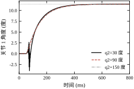
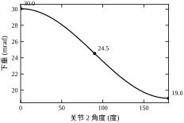
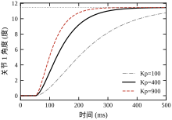
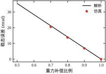
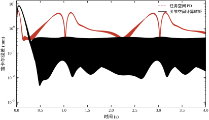
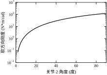
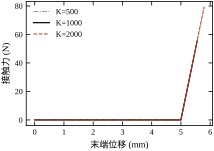
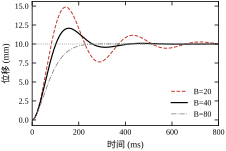
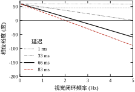
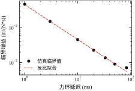

第 96 章把“给定位形下要出多大力矩”算清楚了，第 97 章把“参考轨迹从哪来”补齐了，第 98 章把“两根轴怎么走得不偏”讲透了。三章合起来，一台直角平台已经能跑。但把同样的办法搬到一条六轴手臂上，会立刻遇到一个新问题：你要的是末端的位置，电机给的是关节的角度，中间隔着一层几何；你要的是末端的力，电机给的是关节的力矩，中间还隔着一层力映射。 这两层映射随位形变化，而“每个关节各调各的”这种办法对它们一无所知。
一句话概括本章的立场：机械臂控制的核心不是“把每个关节调好”，而是“把误差定义在正确的空间里”；空间选错，再高的增益也只是把错误的地方调得更精确。
同一条手臂，可以在三个空间里描述：
三者之间由两个映射连接：几何映射 \mathbf{p}=f(\mathbf{q}) 及其雅可比 \mathbf{J}=\partial f/\partial\mathbf{q}，力映射 \boldsymbol{\tau}=\mathbf{J}^{\mathsf T}\mathbf{F}（虚功原理）。本章所有方法，区别只在于“把控制器建在哪个空间、用什么补偿这两个映射”。
按补偿的多少，机械臂控制可以排成四层：
四层的门槛依次升高，收益也依次不同：第一层到第二层是“精度”的跃迁，第二层到第三层是“指标口径”的跃迁，第三层到第四层是“任务性质”的跃迁。看清楚自己在第几层，比选哪个算法更重要。
先看第一层在最不利位形下的表现。统一算例（§99.1.6）里，关节 1 用 K_p=400 N·m/rad、K_d=40 N·m·s/rad，不带重力前馈。当手臂完全伸展（q_2=0°）时，关节 1 要扛住 12.017 N·m 的重力矩，稳态偏差
e_{ss}=\frac{G_1}{K_p}=\frac{12.017}{400}=30.04\ \text{mrad}
在 0.70 m 处折合 21.03 mm。而定位精度要求通常写 0.1 mm——差了 210 倍。这不是增益没调好，是“纯比例反馈要产生力矩就必须有偏差”这个物理事实；把 K_p 提到 40000 可以把它压到 0.21 mm，但那时机械已经在自己叫了（§99.6.1）。
所以第一层必须加两样东西：重力前馈（消掉这个静态偏差）与惯量补偿（消掉位形带来的动态变化）。 这两样就是第二层。
第二层之前，先看清第一层的另一个毛病：同一组增益，在不同位形下的闭环参数不一样。
关节 1 的等效惯量 M_{11} 在 q_2=0° 时是 0.5717 kg·m²，到 q_2=180° 时是 0.2117 kg·m²，比值 2.701。于是同一组 K_p、K_d 给出的自然频率与阻尼比是
\omega_n=\sqrt{\frac{K_p}{M_{11}}},\qquad \zeta=\frac{K_d}{2\sqrt{K_pM_{11}}}
带宽从 4.30 Hz 变到 6.56 Hz（1.52 倍），阻尼比从 1.35 变到 2.06。注意方向：折叠位反而更快、更“钝”。 因为在折叠位关节 1 带动的惯量小，同样的力矩产生的加速度大。
这在点位作业里还能忍：反正最后会停准（只要重力前馈到位）。但在连续轨迹里忍不了：同一段圆弧，走到伸展段与折叠段时“跟得上”的程度不一样，轮廓就会随位形起伏——不是圆，是一个随 q_2 变形的闭合曲线。
本章按四层往上走，每一层回答一个问题：
第四层之后还有视觉伺服（§99.10）：把相机当成一个“慢传感器”接进环路，它的延迟是 66.3 ms，比控制周期大 66 倍，这决定了它只能做外环。
全章沿用第 96 章的两连杆，参数见表 99-1。换一组参数，本章所有数都要重算，但每条结论的“形状”不变。
| 参数 | 符号 | 取值 | 备注 |
|---|---|---|---|
| 连杆长度 | L_1,L_2 | 0.40, 0.30 m | 可达半径 0.10–0.70 m |
| 连杆质量 | m_1,m_2 | 2.0, 1.5 kg | 质心在杆中点 |
| 减速比 | n | 50:1 | 电机侧折算 |
| 控制周期 | T_s | 1 ms | 位置环 |
| 积分步长 | \Delta t | 0.1 ms | 仿真 |
| 名义位形 | \mathbf{q}_0 | (0°,90°) | 折叠直角 |
| 关节 1 惯量 | M_{11} | 0.2117–0.5717 kg·m² | 随 q_2 变化 2.701 倍 |
| 名义重力矩 | G_1 | 9.810 N·m | 电机侧 0.1962 N·m |
| 关节 1 峰值力矩 | \tau_{\max} | 100 N·m | 用于校核 |
表 99-1 统一算例的参数
关于 \tau_{\max} 为什么是 100 N·m，而不是第 96 章的 113.85 N·m。 第 96 章按第 95 章那台 750 W 电机（额定 2.277 N·m，经 50:1 减速）的连续输出能力 113.85 N·m 作饱和边界；本章取 100 N·m，是同一台机器上更保守的峰值校核口径，为温升与减速器冲击留约 12% 的余量。两个数不矛盾，但会挪动“撞墙点”：按 \tau_{\text{peak}}=M_{11}k_p\Delta q+G_1 反解，100 N·m 对应 K_p=1151，113.85 N·m 对应 1328。读跨章数字时，先确认它说的是“连续”还是“峰值”——这是本书里最容易混的一处口径。
误区一：把“关节误差小”当成“末端误差小”。 关节误差 1 mrad，在 r=0.70 m 处是 0.70 mm；在 r=0.20 m 处只有 0.20 mm。同一个控制器，工件上的后果差 3.5 倍。指标写在末端，就要在末端量。
误区二：以为“加前馈”等于“加增益”。 前馈补的是“已知的确定量”（重力、科氏、惯量），增益压的是“未知的偏差”。前者不改变稳定性，后者一定改变稳定性。§99.6.2 会看到：质量模型错 30% 只改变动态，不产生稳态误差；而增益调高 4 倍，峰值力矩从 41.14 N·m 涨到 135.14 N·m，直接撞上 100 N·m 的上限。
误区三：把力控当成“位置环加个力传感器”。 力环的对象是“环境刚度 + 机器人刚度”的串联，它的增益上限与延迟成反比（§99.10.3），与位置环的整定逻辑完全不同。把位置环的增益照搬过来，十有八九会振。
本章只讲“多关节如何协同去满足末端指标”。单轴三环整定见第 95 章，运动学与动力学建模见第 96 章，轨迹规划与插补见第 97 章，两轴同步与轮廓误差见第 98 章。PID 的一般形式见第 44 章与第 106 章；MPC 用于机械臂的版本见第 58 章与第 80 章；Smith 预估器处理延迟的思路见第 47 章与第 107 章——本章的视觉延迟补偿（§99.10.4）与它是同一类问题，但不重复推导。
本章会出现几百个数，但真正撑起全部论证的只有四个。先把它们摆出来，后面每节都在给这四个数补上下文：
四个数的结构比数值更重要。前两个都是“除出来”的：
e_{ss}=\frac{G_1}{K_p}=\frac{12.017}{400}=30.04\ \text{mrad},\qquad \frac{M_{11}(0°)}{M_{11}(180°)}=\frac{0.5717}{0.2117}=2.701
后两个都是“乘出来”的：0.245 mm 是“扰动加速度 ÷ 闭环刚度”沿轨迹积分的结果；66.3 ms 是“曝光 + 处理 + 一帧”三段相加，再乘频率就变成相位。
所以全章的定量结论只有两种形式：\text{误差}=\text{扰动}/\text{增益}，或 \text{相位}=\text{延迟}\times\text{频率}。前者告诉你“要提高什么”，后者告诉你“要减少什么”。凡是不能用这两种形式写出来的说法，本章都不采用——那是形容词，不是工程结论。
四个数之间还有一条因果链值得记住：21.03 mm 说明“反馈不够”，于是要前馈；前馈需要模型，模型随位形变（2.701 倍），于是要惯量补偿；补偿之后剩 0.245 mm，这已经是硬件的精度地板；再往上想提高，只能靠外部传感器，而外部传感器带来 66.3 ms 的延迟，把可用的带宽压到 0.6 Hz。一条链走完，你正好从“关节”走到了“相机”，这也是本章的编排顺序。
n 自由度刚性机械臂的方程是
\mathbf{M}(\mathbf{q})\ddot{\mathbf{q}}+\mathbf{C}(\mathbf{q},\dot{\mathbf{q}})\dot{\mathbf{q}}+\mathbf{G}(\mathbf{q})+\mathbf{F}(\dot{\mathbf{q}})=\boldsymbol{\tau}
三项的非线性各有来源：\mathbf{M} 随位形变（本章 2.701 倍），\mathbf{C}\dot{\mathbf{q}} 随速度平方变，\mathbf{G} 随位形变且与速度无关。第 96 章已给出两连杆的显式表达，本章直接调用。
这三项的性质不同，补偿方式也不同。 \mathbf{G} 是静态的，补不准就留下稳态偏差（§99.6.2）；\mathbf{M} 是动态的，补不准只改变超调与调节时间；\mathbf{C} 在低速时很小，在高速时才显著。先补哪一项，取决于你的速度区间。
取控制律
\boldsymbol{\tau}=\hat{\mathbf{M}}(\mathbf{q})\left[\ddot{\mathbf{q}}_d+\mathbf{K}_d\dot{\mathbf{e}}+\mathbf{K}_p\mathbf{e}\right]+\hat{\mathbf{C}}(\mathbf{q},\dot{\mathbf{q}})\dot{\mathbf{q}}+\hat{\mathbf{G}}(\mathbf{q})
其中 \mathbf{e}=\mathbf{q}_d-\mathbf{q}，帽子表示“控制器里用的模型”。若模型精确（\hat{\mathbf{M}}=\mathbf{M} 等），代入动力学方程，非线性项逐项抵消，得到
\ddot{\mathbf{e}}+\mathbf{K}_d\dot{\mathbf{e}}+\mathbf{K}_p\mathbf{e}=0
这是一个与位形、速度都无关的线性误差方程。 取 \mathbf{K}_p=k_p\mathbf{I}、\mathbf{K}_d=2\sqrt{k_p}\mathbf{I}，每根关节都是临界阻尼，\omega_n=\sqrt{k_p}。
这就是“计算转矩”这个名字的来历：不是“算出转矩”，而是“用转矩把非线性算掉”。它的全部收益来自模型精度，全部风险也来自模型精度。
线性化之后，增益可以按二阶系统随意选，但有一笔账必须当场算：阶跃的峰值力矩。
峰值出现在阶跃之后的第一个控制周期：此刻速度仍为零（\dot{\mathbf{e}}=0），误差还是满幅（\mathbf{e}=\Delta\mathbf{q}），指令加速度就是 k_p\Delta\mathbf{q}。于是峰值力矩有精确表达
\tau_{\text{peak}}=M_{11}\,k_p\,\Delta q+G_1
本章 M_{11}=0.3917、\Delta q=0.2 rad、G_1=9.810 N·m，三组增益逐项核对：k_p=100 给 7.83+9.81=17.64 N·m，k_p=400 给 31.34+9.81=41.14 N·m，k_p=900 给 70.51+9.81=80.31 N·m——与仿真逐位相同。这不是拟合，是把“第一拍”这个时刻代进去的恒等式。
这笔账决定了增益的上限：k_p=900 时峰值 80.31 N·m，还剩 20% 余量；k_p=1600 时需要 125.33+9.81=135.14 N·m，已经超过 100 N·m 的能力。在这种情况下，“再调高一点”不是调参，是要求换电机。
式子里两项的量级关系值得记住：k_p 翻 4 倍，惯量项翻 4 倍，重力项一分不动。所以低增益时重力项主导（k_p=100 时它占 56%），高增益时惯量项主导（k_p=900 时重力只占 12%）。这解释了一个常见现象：小增益下“加前馈”收益巨大，大增益下“加前馈”几乎看不出差别。
末端速度与关节速度的关系是 \dot{\mathbf{p}}=\mathbf{J}(\mathbf{q})\dot{\mathbf{q}}，静力关系由虚功原理给出：
\boldsymbol{\tau}=\mathbf{J}^{\mathsf T}\mathbf{F}
两个式子合起来说明一件事：雅可比转置就是“力从末端翻译到关节”的字典。 任务空间控制器就是围绕这一条搭起来的。
任务空间 PD 的控制律是
\boldsymbol{\tau}=\mathbf{J}^{\mathsf T}\left[\mathbf{K}_c(\mathbf{p}_d-\mathbf{p})+\mathbf{K}_d(\dot{\mathbf{p}}_d-\dot{\mathbf{p}})\right]+\mathbf{G}(\mathbf{q})
它把“末端位置误差”直接变成“末端虚拟力”，再用 \mathbf{J}^{\mathsf T} 翻成关节力矩。
把上式在工作点附近线性化，\mathbf{p}_d-\mathbf{p}\approx\mathbf{J}\mathbf{e}，于是
\boldsymbol{\tau}\approx\mathbf{J}^{\mathsf T}\mathbf{K}_c\mathbf{J}\,\mathbf{e}
\mathbf{J}^{\mathsf T}\mathbf{K}_c\mathbf{J} 就是任务空间 PD 在关节空间里的等效刚度矩阵。 它一般不是对角阵——意味着“给末端一个方向上的刚度，关节上会串到另一个方向”。
更要紧的是它的特征值：\lambda_i(\mathbf{J}^{\mathsf T}\mathbf{K}_c\mathbf{J})=K_c\sigma_i^2(\mathbf{J})。当机械臂接近奇异（\sigma_{\min}\to0），最小特征值趋于零，那个方向的等效刚度就没了。本章 q_2=1° 时 \lambda_{\min}=0.0189 N·m/rad，柔度 52.891 rad/(N·m)——末端在那个方向上几乎是自由的（§99.6.4）。
阻抗控制不规定位置，而规定“末端对外表现出的动态”：
\mathbf{M}_d(\ddot{\mathbf{p}}-\ddot{\mathbf{p}}_d)+\mathbf{B}_d(\dot{\mathbf{p}}-\dot{\mathbf{p}}_d)+\mathbf{K}_d(\mathbf{p}-\mathbf{p}_d)=-\mathbf{F}_{\text{ext}}
稳态时（导数为零）
\mathbf{K}_d(\mathbf{p}-\mathbf{p}_d)=-\mathbf{F}_{\text{ext}}\quad\Longrightarrow\quad \Delta\mathbf{p}=-\mathbf{K}_d^{-1}\mathbf{F}_{\text{ext}}
偏移量与力成正比、与刚度成反比。 本章 K=1000 N/m、指令比墙多伸 10 mm，稳态接触力 1000\times0.010=10 N，仿真 9.90 N（差 1%，因为墙也在动 0.10 mm）。
这就是阻抗控制的本质：用“软”换“稳”。位置环要“不管多大力都不许偏”，阻抗控制要“按规定的比例偏”。
导纳是阻抗的倒数关系：输入力、输出位置。
\mathbf{M}_d\ddot{\mathbf{x}}+\mathbf{B}_d\dot{\mathbf{x}}+\mathbf{K}_d\mathbf{x}=\mathbf{F}_{\text{ext}}
同样看稳态：\mathbf{x}_{ss}=\mathbf{K}_d^{-1}\mathbf{F}_{\text{ext}}，与初始间隙无关。本章 M_d=2 kg、K_d=1000 N/m，10 N 的力阶跃给出 10.00 mm 位移，\omega_n=\sqrt{1000/2}=22.36 rad/s，B_d=40 时 \zeta=0.447、超调 20.77%。
阻抗与导纳的工程区别不在公式，而在“谁是因、谁是果”：阻抗控制里机器人是“位置源”（自己走，遇到力就退），导纳控制里机器人是“力源”（受力才动）。前者适合刚性大的机器人做柔性作业，后者适合“机器人本身很硬、但要在人旁边工作”的场合。
显式力控的环路里有两个刚度在串联：机器人自身的刚度 K_r 与环境刚度 K_e。
先量环境刚度，再定力控指标，这是力控设计的第一步，也是最常被跳过的一步。
最简单的显式力控是“力误差 → 速度指令”：
v=k_f(F_d-F)
对象是纯刚度接触，F=K_e x，于是
\frac{dF}{dt}=K_e v=K_e k_f(F_d-F)
一阶惯性，时间常数 1/(K_ek_f)。增益越大越快，但延迟会把它变成振荡器。 本章的仿真扫描给出：临界增益与延迟成反比，乘积稳定在 4.5\times10^{-5}–5.9\times10^{-5} s²/m（§99.10.3）。
相机不是“测量位置”，而是“测量一段时间之前的位置”。链路延迟 \Delta 由三段组成：
\Delta=t_{\text{曝光}}+t_{\text{处理}}+\frac{1}{f_{\text{fps}}}
本章 8+25+33.3=66.3 ms。它在频域里就是纯滞后 e^{-s\Delta}，相位贡献 -360°\cdot f\Delta。闭环频率每升高 1 Hz，相位就多丢 23.9°——这是“视觉只能做外环”的定量依据。
四条都不含“最优”，都只描述“给定参数下的必然结果”。本章后面所有的调参，都是在这四条上找平衡点。
同一个 \mathbf{J}，在三个地方以三种身份出现：
\dot{\mathbf{p}}=\mathbf{J}\dot{\mathbf{q}},\qquad \boldsymbol{\tau}=\mathbf{J}^{\mathsf T}\mathbf{F},\qquad \Delta\mathbf{q}\approx\mathbf{J}^{-1}\Delta\mathbf{p}
第一个是运动映射（正用），第二个是力映射（转置），第三个是增量逆解（求逆）。三者的数学性质差别极大：
这是机械臂控制里最重要的一次“免费午餐”：力映射用转置而不是逆，于是它绕过了所有奇异性的麻烦。 阻抗控制、力控、任务空间 PD 全都建立在这一条上——它们只要求“能出力”，不要求“能任意运动”。
把本章的两个奇异值代进去，这件事更清楚。q_2=90° 时 \sigma_{\max}=0.5389、\sigma_{\min}=0.2227；q_2=1° 时 \sigma_{\max}=0.7616、\sigma_{\min}=0.00275。于是：
奇异位形的真相是“力气更大、但动不了”。 这个说法比“变软”准确得多，也直接给出了对策：在奇异附近不要做位置控制（要运动），可以做力控（要出力）。很多人把机械臂开到伸直位去“够”一个远处的点，然后抱怨“那里控制不稳”——不稳的不是控制，是几何。
第三个用法（增量逆解）还有一个实践上的坑：\Delta\mathbf{q}=\mathbf{J}^{-1}\Delta\mathbf{p} 只在“一步很小”时成立。本章的圆轨迹半径 0.15 m，一圈 4 s，每 1 ms 走 0.236 mm——这个步长下线性化误差可以忽略；若把速度提到 2 m/s，每步 2 mm，线性化误差就开始显现，表现为“实际走的圆比指令的圆偏一点”。
§99.2.5 直接给了结论“\mathbf{J}^{\mathsf T}\mathbf{K}_c\mathbf{J} 的特征值是 K_c\sigma_i^2”，中间那一步值得补上，因为它顺带说明了两件事：刚度的条件数是雅可比条件数的平方，以及“刚度为零”与“奇异”是同一件事。
起点是三行虚功：
\boldsymbol{\tau}=\mathbf{J}^{\mathsf T}\mathbf{F},\qquad \mathbf{F}=-\mathbf{K}_c\Delta\mathbf{p},\qquad \Delta\mathbf{p}=\mathbf{J}\Delta\mathbf{q}
合成一行：
\boldsymbol{\tau}=-\mathbf{J}^{\mathsf T}\mathbf{K}_c\mathbf{J}\,\Delta\mathbf{q}
中间的 \mathbf{J}^{\mathsf T}\mathbf{K}_c\mathbf{J} 就是“等效关节刚度矩阵” \mathbf{K}_q。接下来做奇异值分解 \mathbf{J}=\mathbf{U}\boldsymbol{\Sigma}\mathbf{V}^{\mathsf T}，\mathbf{U}、\mathbf{V} 是正交阵，\boldsymbol{\Sigma}=\text{diag}(\sigma_1,\sigma_2)。代入，并取各向同性的 \mathbf{K}_c=K_c\mathbf{I}：
\mathbf{K}_q=\mathbf{V}\boldsymbol{\Sigma}\mathbf{U}^{\mathsf T}(K_c\mathbf{I})\mathbf{U}\boldsymbol{\Sigma}\mathbf{V}^{\mathsf T}=K_c\,\mathbf{V}\boldsymbol{\Sigma}^2\mathbf{V}^{\mathsf T}
\mathbf{U}^{\mathsf T}\mathbf{U}=\mathbf{I} 把中间那一对消掉了，剩下的 \mathbf{V}\boldsymbol{\Sigma}^2\mathbf{V}^{\mathsf T} 是一个“以 \mathbf{V} 为特征向量、以 \sigma_i^2 为特征值”的对称阵。乘上 K_c，特征值就是 K_c\sigma_1^2 与 K_c\sigma_2^2，特征向量是 \mathbf{V} 的两列。
物理读法：\sigma_i 是“单位关节速度能产生多少末端速度”，\sigma_i^2 是“单位关节位移能产生多少末端位移”，乘 K_c 就是“单位关节位移要多少力矩”。\sigma 小意味着“关节转很多、末端才动一点”，所以刚度自然大；反过来，\sigma 大意味着“关节一动、末端跑很远”，刚度就小。这就是 §99.4.9 里“关节空间给增益，奇异方向变硬”的全部原因。
两条推论可以直接用。
第一条：刚度的条件数是雅可比条件数的平方。
\kappa_K=\frac{\lambda_{\max}}{\lambda_{\min}}=\left(\frac{\sigma_{\max}}{\sigma_{\min}}\right)^2=\kappa_J^2
本章 q_2=90° 时 \kappa_J=0.5389/0.2227=2.42，\kappa_K=726.0/123.96=5.86，正好 2.42^2。q_2=1° 时 \kappa_J=276.92，\kappa_K=1449.9/0.0189\approx7.7\times10^4，同样是平方。所以“条件数 10”这条经验线，在刚度上等于“刚度差 100 倍”——同一句话在两个空间里听起来完全不是一个量级，这也是讨论奇异时经常各说各话的原因。
第二条：\det\mathbf{K}_q=K_c^2\det(\mathbf{J})^2。 两边开方：
\sqrt{\lambda_1\lambda_2}=K_c\left|\det\mathbf{J}\right|=2500\times0.12=300\ \text{N·m/rad}
这就是 §99.7.1 里那个“汇率”的来历。几何平均刚度不随位形方向变，只随 |\det\mathbf{J}| 变——它是一个比“最大/最小刚度”更适合做跨位形比较的标量。
最后一条：\mathbf{J}^{\mathsf T}\mathbf{K}_c\mathbf{J} 是半正定的（\mathbf{x}^{\mathsf T}\mathbf{J}^{\mathsf T}\mathbf{K}_c\mathbf{J}\mathbf{x}=\|\mathbf{K}_c^{1/2}\mathbf{J}\mathbf{x}\|^2\ge0），最小特征值为零当且仅当 \mathbf{J} 奇异。所以“刚度没了”和“到了奇异位形”不是两件事，是同一件事的两种说法。 §99.6.3 说“奇异不是失稳、是失控”，依据就在这里：刚度为零的弹簧不会振，它只是拦不住任何扰动。
拿到一个机械臂项目，先问三个问题：
这三问的答案决定后面所有参数的整定逻辑，问错了后面全白做。
指标写在哪个空间，误差就在哪个空间定义、在哪个空间测量。这不是形式问题：本章同一个控制器，关节误差相同，末端误差在伸展位是折叠位的 3 倍。
工程上的做法是双记录：控制器内部按任务空间算误差（为了控制），验收时按任务空间测误差（为了交差），两者用同一个雅可比换算。若只记关节误差，验收时无法回答“工件上到底差多少”。
计算转矩需要 \hat{\mathbf{M}}、\hat{\mathbf{C}}、\hat{\mathbf{G}}。来源有三个：
本章用的是“均匀杆”假设。§99.6.2 会看到：质量错 30% 不产生稳态误差，重力错 30% 产生 14.409 mm。所以预算有限时，先把重力项测准。
按 §99.2.3 的账算：先定 \omega_n（由轨迹的最高频率决定，一般取 5–10 倍），再定 k_p=\omega_n^2、k_d=2\omega_n，最后校核峰值力矩。
本章圆轨迹最高 0.5 Hz，取 \omega_n=20 rad/s（3.18 Hz，6.4 倍），k_p=400。峰值力矩 41.14 N·m，是上限的 41%。留 50% 余量是常规做法，因为轨迹可能临时加速。
把 §99.2.3 的精确式代进去，与电机—减速器的峰值能力比：
\tau_{\text{peak}}=M_{11}k_p\Delta q+G_1
本章 31.34+9.81=41.14 N·m，与仿真的 41.14 N·m 完全一致。这个式子能对上，是因为它算的就是“第一拍”——所有项都在那一刻有确定值，没有待定的经验系数。 若换了连杆或换了工作点，只需重算 M_{11} 与 G_1 两个数。
工程上仍要留余量：本章 41.14 N·m 是 100 N·m 的 41%，常规要求不超过 70%，因为轨迹可能临时加速，而且减速器的峰值能力通常只允许持续 1–2 s。
若指标在末端，把关节增益换算成笛卡尔刚度：\mathbf{K}_c 的量级应使 \mathbf{J}^{\mathsf T}\mathbf{K}_c\mathbf{J} 的特征值与 k_p 相当。本章 \sigma\approx0.5，K_c=2500 给出 \lambda\approx2500\times0.25=625，与 k_p=400 同量级。
注意：任务空间 PD 与计算转矩不能简单叠加。 若两者都用，等于把刚度叠加了两次，峰值力矩会随之抬高（本章任务空间 PD 34.17 对关节计算转矩 24.52 N·m，已经高 39%）。
接触作业先量环境刚度 K_e，再按“允许的最大力”反解刚度：
K_d=\frac{F_{\max}}{\Delta p_{\max}}
本章 F_{\max}=40 N、允许偏移 40 mm，给出 K_d=1000 N/m。若允许偏移只有 4 mm，刚度就要 10000 N/m，力环的增益上限随之提高 10 倍——这时候位置分辨率就成了瓶颈（1 N 对应 10 μm）。
由环境刚度与延迟共同决定：
f_f\approx\frac{1}{2\pi\tau_f}=\frac{K_ek_f}{2\pi},\qquad k_f\le\frac{5\times10^{-5}}{\Delta}
本章 \Delta=1 ms 时 k_f\le0.05，\tau_f=0.21 ms；若力信号走视觉（\Delta=66.3 ms），k_f\le7.5\times10^{-4}，\tau_f=13 ms。同一个力环，传感器换了，带宽差 66 倍。
视觉只做外环，且必须先算延迟预算。本章 66.3 ms 对应“闭环频率上限 2.513 Hz（裕度为零）、0.628 Hz（裕度 45°）”。若工艺要求 5 Hz 的视觉闭环，这个相机链路根本不够，只能换高帧率相机或加预测。
三件事都要有，缺一不可：
三条判据，缺一不可：
三条判据对应三个不同的失效模式：静态差 → 模型或前馈；动态差 → 增益或带宽；接触差 → 刚度或延迟。混在一起测，出了问题分不清。
把十二步的输入输出记成一张表，尤其是“用了什么模型、误差多大、峰值力矩多少”三项。这三项决定了结论能不能迁移到下一代产品——换电机、换减速器、换连杆，前两项要重算，第三项要重新校核。
十二步走完不是结束。真正的设计是从“验收不通过”那一刻开始的：哪一条不过，就回到对应的那一步，而不是从头再来。
十二步走完，把每一步压成一行“已知 → 算 → 得数”，就是一张可以贴在工位上的卡。这张卡的价值在于“顺序”和“每一步的输出是什么”，公式本身都能在前面的小节里查到。
这张卡上没有一个“调”字，全是“算”。 这不是巧合：本章十二步里，只有第 6、7 步的最后一点取舍需要经验（\mathbf{K}_c 取 2500 还是 3000），其余都是代入公式。把能算的都算完，剩下的才叫调参。
用这张卡跑一遍本章的算例，十分钟能得出全部关键数：K_p=400（第 4 步）、\tau_{\text{peak}}=41.14 N·m 余 58.9%（第 5 步）、K_c=2500 对应 300 N·m/rad（第 6 步）、K=1000 给 9.90 N（第 7 步）、k_f=0.01575（第 8 步）、视觉 0.628 Hz（第 9 步）。六个数字定了，机器的骨架就定了，剩下的都是在这六个数字附近微调。
设计卡上十二步全是“算”，但真机上还有一步算不出来、只能排顺序的事：抱闸什么时候松、力矩什么时候使能。 顺序错了，会看到一次“上电就掉一下”的吓人动作。
先算这一下的量级。 若抱闸先松、力矩后使能，中间那段时间的重力矩 G_1=9.810 N·m 没有任何东西抵抗。名义位形下角加速度
\alpha=\frac{G_1}{M_{11}}=\frac{9.810}{0.3917}=25.04\ \text{rad/s}^2 .
松闸到使能若隔 50 ms，自由转过的角度是 \tfrac12\alpha t^2=\tfrac12\times25.04\times0.0025=0.0313 rad，即 1.79°。一上电就歪 1.79°，操作员的第一反应一定是“编码器坏了”，而它只是顺序问题。
正确顺序只有一种：先使能力矩（含重力前馈），确认力矩已经建立，再松闸。 反过来断电时是镜像的：先抱闸、确认咬合、再断力矩。两头都以“抱闸咬合”为交接点，不以“时间到了”为交接点——因为抱闸的机械闭合需要几十毫秒，用固定延时去赌，迟早赌输。
抱闸力矩的选法：不小于最不利位形重力矩的 2 倍。本章名义位形 G_1=9.810 N·m，20 N·m 的抱闸在这点是 2.0 倍；但 §99.7.6 说明 G_1 随位形变，校核必须在“手臂完全伸出、负载最大”的那个位形上做，不是在名义位形上做。这一条与第 5 步校核力矩是同一个道理：所有“够不够”的问题，都要在最不利处回答。
最后一个容易忽略的细节：松闸瞬间的静摩擦。 抱闸松开时，摩擦从“静”跳到“动”，输出轴上会有一个力矩阶跃。它落在 §99.4.10 那 1.20 N·m 的死区量级上——所以上电第一秒的“咯噔”一声不是故障，是死区在换向。 想让它不响，只能靠摩擦前馈（§99.9.9 骨架里那一行 friction_ff），而不是调增益。
本节把四层控制依次放进连续时间域，逐个写出闭环方程，再用仿真核对。目的不是把公式再推一遍，而是回答同一个问题：同一组参数下，闭环的哪一部分随位形变，哪一部分不变。 变的那些决定“验收时会在哪里翻车”，不变的那些决定“哪些结论可以带着走”。
先把 q_2 冻结，关节 1 的方程是 M_{11}\ddot q_1=\tau-G_1。代入 \tau=K_p(q_{1d}-q_1)-K_d\dot q_1，整理成误差方程
M_{11}\ddot e+K_d\dot e+K_p e=G_1
这是一个带常值右端的二阶系统：动态部分由 M_{11}、K_p、K_d 决定，终值由 G_1/K_p 决定。两件事互不干扰，这一点后面会反复用到。
名义位形下 M_{11}=0.3917、K_p=400、K_d=40，得
\omega_n=\sqrt{\frac{400}{0.3917}}=31.96\ \text{rad/s}=5.09\ \text{Hz},\qquad \zeta=\frac{40}{2\sqrt{400\times0.3917}}=1.598
过阻尼，所以阶跃没有超调。这一点在五个位形上都是 0.00%——“没有超调”不是调得好，是 \zeta>1 的必然结果，代价是慢。
把五个位形排开，会看到一件容易被误读的事：
| q_2 | M_{11} (kg·m²) | \omega_n (rad/s) | 带宽 (Hz) | \zeta | 调节时间 (s) |
|---|---|---|---|---|---|
| 30° | 0.5476 | 27.03 | 4.30 | 1.351 | 0.3927 |
| 60° | 0.4817 | 28.82 | 4.59 | 1.441 | 0.4012 |
| 90° | 0.3917 | 31.96 | 5.09 | 1.598 | 0.4094 |
| 120° | 0.3017 | 36.41 | 5.80 | 1.821 | 0.4171 |
| 150° | 0.2358 | 41.19 | 6.56 | 2.059 | 0.4225 |
表 99-2 独立关节 PD 的等效参数随位形变化（K_p=400、K_d=40）
带宽从 4.30 Hz 变到 6.56 Hz，1.52 倍；阻尼比从 1.351 变到 2.059，1.52 倍；而调节时间只从 0.3927 s 变到 0.4225 s，1.08 倍。三组数放在一起，说明“调节时间”这个指标在这一层几乎没有分辨力。
原因是过阻尼系统的响应由慢极点决定，而慢极点近似等于 K_p/K_d：
s_{\text{slow}}\approx-\omega_n\left(\zeta-\sqrt{\zeta^2-1}\right)\;\longrightarrow\;-\frac{K_p}{K_d}=-10\ \text{rad/s}
代入两端验证：q_2=30° 时 27.03\times(1.351-0.908)=11.97 rad/s，q_2=150° 时 41.19\times(2.059-1.800)=10.67 rad/s。两个慢极点只差 1.12 倍，都贴着 10 rad/s。所以同一组 K_p、K_d 下，慢极点与惯量无关，快极点才与惯量有关；只看调节时间，等于只看了慢极点。
图 99-1 把三个位形的阶跃画在一起，三条曲线的“起跳速度”明显不同，“落定时刻”几乎重合。

验收上的教训：如果一个项目只测“阶跃调节时间”，这台机器在伸展位与折叠位看起来一样；但做连续轨迹时，伸展位的跟随能力只有折叠位的 66%。指标要选能看见带宽的那一个——上升时间、相位裕度，或者直接测轨迹误差。
还有一点必须写在脚注里：q_2=0° 完全伸展时，关节 2 的保持力矩几乎为零，关节 1 的加速会把它推过原点，仿真里出现 85% 的“超调”。这不是控制器的问题，是“两关节刚性耦合 + 零保持力矩”的几何事实，它提醒我们：单轴阶跃测试在多关节机器上本来就只在“另一根轴锁得住”的位形下才有意义。
把 e_{ss}=G_1/K_p 沿 q_2 扫一遍，得到表 99-3。G_1 的解析式是
G_1=\left(m_1l_{c1}+m_2L_1\right)g\cos q_1+m_2l_{c2}\,g\cos(q_1+q_2)
在 q_1=0 处，前一项是常数 (0.4+0.6)\times9.81=9.810 N·m，后一项是 2.207\cos q_2。两项之比 4.4:1，意味着重力矩在整个工作空间里都不会变号——它从 12.017 N·m 单调降到 7.603 N·m，始终为正。
| q_2 | G_1 (N·m) | 下垂 (mrad) | 末端偏差 (mm) |
|---|---|---|---|
| 0° | 12.017 | 30.04 | 21.03 |
| 45° | 11.371 | 28.43 | 19.90 |
| 90° | 9.810 | 24.53 | 17.17 |
| 135° | 8.249 | 20.62 | 14.44 |
| 180° | 7.603 | 19.01 | 13.30 |
表 99-3 无重力前馈时的稳态下垂（K_p=400，末端按 0.70 m 折算）
三点值得注意。
第一，最不利位形与最大力臂重合。 下垂最大在 q_2=0°（30.04 mrad），而这时末端恰好在 0.70 m 处，角度误差被放大成 21.03 mm。两个最坏因素叠在同一个位形上，这不是巧合：伸展位既是重力矩最大处，也是角误差放大倍数最大处。工程上校核静差，只需要校核这一个点。
第二，比值的量级。 21.03 mm 是 0.1 mm 的 210 倍。把它压到 0.1 mm 需要 K_p=84000 N·m/rad，按 §99.2.3 的式子峰值力矩要 6600 N·m——比现有电机大 66 倍。所以“提高增益压静差”在这里不是一条路，唯一的出路是前馈。
第三，下垂随位形变 1.58 倍。 30.04/19.01=1.58。这意味着即使做了标定，只要标定点的位形与实际工作位形不同，残余静差就会按这个比例变。标定必须在实际工作位形上做，不能“随便找个位置对一下”。
图 99-2 把这条曲线画出来：一条单调下降的曲线，没有拐点、没有换向。

如果 G_1 会变号（例如连杆很短、末端质量很小），曲线上会出现零点，下垂方向翻转。那种情况下摩擦带来的死区会变成“跨零点的黏滞”，比单向偏差难处理得多——这也是“重力矩符号恒定”值得单独说一句的原因。
计算转矩把右端的 G_1 也用前馈补掉，误差方程变成齐次的
\ddot{\mathbf{e}}+\mathbf{K}_d\dot{\mathbf{e}}+\mathbf{K}_p\mathbf{e}=\mathbf{M}^{-1}\Delta\boldsymbol{\tau}_{\text{model}}
模型精确时右端为零，于是终值恒为零，与位形无关。这是第二层相对第一层唯一的、也是全部的差别：不是“力气更大”，是“右端那项没了”。
三组增益的实测结果在表 99-4。上升时间与 1/\sqrt{K_p} 严格成比例：0.3344/0.1675=1.996，0.3344/0.1115=2.999，对应 \sqrt{100}:\sqrt{400}:\sqrt{900}=1:2:3。
| K_p | K_d | \omega_n (rad/s) | 带宽 (Hz) | 峰值力矩 (N·m) | 上升 (s) | 调节 (s) |
|---|---|---|---|---|---|---|
| 100 | 20.00 | 10.00 | 1.59 | 17.64 | 0.3344 | 0.6283 |
| 400 | 40.00 | 20.00 | 3.18 | 41.14 | 0.1675 | 0.3417 |
| 900 | 60.00 | 30.00 | 4.77 | 80.31 | 0.1115 | 0.2444 |
| 1600 | 80.00 | 40.00 | 6.37 | 135.14（超限） | — | — |
表 99-4 计算转矩的阶跃响应（关节 1，\Delta q=0.2 rad，上限 100 N·m）
最后一行的意义比前三行都大。 K_p=1600 对应 6.37 Hz 带宽、0.0835 s 上升时间，账面上很漂亮，但它需要 135.14 N·m——超过电机能力 35%。实际运行时力矩被限幅，加速度上不去，误差反而比 K_p=900 更大。“带宽”这个指标在力矩受限时是假的。
再看位形的影响：q_2=0°、90°、180° 三个位置的调节时间分别是 0.3416、0.3417、0.3416 s，超调都是 0.00%。三个位形差 0.0001 s，而第一层在同一位形区间里的调节时间差 0.03 s。 这就是“精确线性化”的字面含义：误差方程里不再有 \mathbf{M}(\mathbf{q})，位形被彻底消掉了。
图 99-3 画的是三条阶跃曲线：起始段几乎重合，分离发生在 0.1 s 之后。

这里有一个容易忽略的代价：K_p 从 400 提到 900，上升时间只快 1.5 倍（0.1675→0.1115），峰值力矩却翻 1.95 倍（41.14→80.31）。原因是峰值力矩里含一项与 K_p 无关的 G_1，它不随增益涨，所以“力矩的涨幅永远小于增益的涨幅”——反过来说，当 G_1 占比很小时（高增益、轻负载、水平臂），力矩会近似与 K_p 成正比，增益的空间就非常窄。
计算转矩的全部收益来自模型，所以要问：模型错了会怎样？答案是两种误差、两种失效方式，这一点比“鲁棒性好不好”这种笼统说法有用得多。
| 情形 | 稳态误差 (mrad) | 末端 (mm) | 理论值 (mrad) |
|---|---|---|---|
| 模型精确 | −0.000 | 0.000 | 0.000 |
| 质量偏大 30% | −0.001 | 0.001 | 0.000 |
| 质量偏小 30% | −0.000 | 0.000 | 0.000 |
| 重力补偿少 30% | −20.584 | 14.409 | 21.224 |
表 99-5 模型误差对稳态精度的影响（K_p=400，q_2=90°）
质量误差不进稳态方程。 稳态时 \ddot{\mathbf{q}}=0，\hat{\mathbf{M}} 乘的是一个零向量，于是 \hat{\mathbf{M}} 错多少都不影响终值。它只影响动态：设 \hat{\mathbf{M}}=\alpha\mathbf{M}，误差方程变成 \ddot{\mathbf{e}}+\alpha\mathbf{K}_d\dot{\mathbf{e}}+\alpha\mathbf{K}_p\mathbf{e}=0，相当于把两组增益同时乘 \alpha。\alpha=1.3 时 \omega_n 升 \sqrt{1.3}=1.14 倍，\zeta 也升 1.14 倍——变快、变钝，但停得准。仿真给出 −0.001 mrad，就是数值误差。
方向值得记牢：控制器“以为”惯量大，就会多给力矩，实际就跑得更快；反之 \alpha=0.7 会让整台机器变慢 16%。所以质量辨识偏保守（宁可估大）在动态上是安全的，估小则会让人误以为“增益不够”而继续加，最后撞上力矩上限。
重力误差直接进稳态方程。 它出现在右端，量纲是加速度：
\mathbf{e}_{ss}=\mathbf{K}_p^{-1}\mathbf{M}^{-1}\Delta\mathbf{G}
本章 \mathbf{M}^{-1}\Delta\mathbf{G}=(8.49,-8.49) rad/s²（\Delta\mathbf{G} 是 0.3\mathbf{G}），除以 K_p=400 得 21.224 mrad。仿真 20.584 mrad，差 3%，原因是稳态点已经偏离名义点 20 mrad，\mathbf{M} 与 \mathbf{G} 都跟着变了——理论值是“在工作点线性化”，仿真是“真的走到那儿”，两者的差别正好是这个量级。
这里还有一个数字值得单独看：如果关节 1 是“独立”的，重力产生的加速度应该是 G_1/M_{11}=9.810/0.3917=25.04 rad/s²；而实际解出来是 \mathbf{M}^{-1}\mathbf{G}=(28.30,-28.30) rad/s²，高了 13%。为什么？因为 \mathbf{M}^{-1} 不是 1/M_{11}——耦合项把关节 2 的重力也“倒”进了关节 1 的加速度里（同时关节 1 的重力在关节 2 上产生了 −28.30 rad/s² 的反向加速度）。这就是“每个关节各补各的重力”会补错的原因：重力项不能逐轴独立补，必须解一次 \mathbf{M}^{-1}。
点位作业看不出质量误差，轨迹作业立刻看得出。同一个圆轨迹，模型精确时稳态 RMS 0.245 mm；质量偏大 30% 时变成 0.985 mm，4.0 倍。因为轨迹上 \ddot{\mathbf{q}}\neq0，\hat{\mathbf{M}} 天天被乘到非零向量上。
图 99-4 把解析线与仿真点画在一起：横轴是重力补偿的比例，纵轴是稳态误差。两条线在 100% 处都过零，斜率就是 1/K_p。

这条结论直接决定预算怎么花：质量、质心、惯量的辨识可以慢慢做，重力项必须一次做准。本章的“均匀杆”假设让质量误差到 30%，代价只是动态慢 14%；而重力项只要少补 30%，就是 14.409 mm——比定位指标大 144 倍。
任务空间 PD 把误差定义在末端：
\boldsymbol{\tau}=\mathbf{J}^{\mathsf T}\left[\mathbf{K}_c(\mathbf{p}_d-\mathbf{p})+\mathbf{K}_d(\dot{\mathbf{p}}_d-\dot{\mathbf{p}})\right]+\mathbf{G}(\mathbf{q})
在工作点附近 \mathbf{p}_d-\mathbf{p}\approx\mathbf{J}\mathbf{e}，代回去得到关节侧的等效刚度 \mathbf{J}^{\mathsf T}\mathbf{K}_c\mathbf{J}——它不是对角阵，说明“给末端一个方向的刚度”会在关节上串到另一个方向。
同一个圆轨迹（r=0.15 m、0.5 Hz、4 s，圆上最大速度 0.4712 m/s、最大加速度 1.4804 m/s²），两种控制的实测对比如表 99-6。
| 控制 | 全程最大 (mm) | 稳态最大 (mm) | 稳态 RMS (mm) | 力矩峰值 (N·m) |
|---|---|---|---|---|
| 关节空间计算转矩 | 8.529 | 0.450 | 0.245 | 24.52 |
| 任务空间 PD | 5.366 | 4.530 | 1.885 | 34.17 |
表 99-6 同一圆轨迹上两种控制的误差与力矩
这张表最容易读错，因为两列的方向是相反的：任务空间 PD 的“全程最大”更小（5.366 对 8.529），“稳态最大”却大了 10 倍（4.530 对 0.450）。
起步段任务空间更好，是因为误差口径对。 轨迹从静止跳到 0.4712 m/s 的圆周运动，关节 CT 的误差定义在关节空间，起步瞬间逆解的初值与参考点之间的差异被雅可比映射到末端时按最大力臂放大；任务空间 PD 直接在末端量这个差异，并且用 \mathbf{K}_c 直接压它，所以起步更平顺。
稳态段任务空间更差，是因为缺加速度前馈。 圆上最大加速度 1.4804 m/s²，产生这个加速度需要 \mathbf{M}\ddot{\mathbf{p}} 量级的力；PD 只能“先有误差、再有力”，于是误差必然存在，大小约等于“所需力除以 \mathbf{K}_c”。关节 CT 有完整的 \ddot{\mathbf{q}}_d 前馈，稳态只剩模型误差，所以能到 0.450 mm。
力矩上任务空间 PD 多用 39%（34.17 对 24.52），原因同上：它靠误差产生力，误差大则力大。
图 99-5 把两条误差曲线画在同一组坐标里：任务 PD 的曲线起步低、后段平；关节 CT 的曲线起步有一个尖峰、后段贴地。

这条对比给出了一个明确的选型规则：指标写在末端、且轨迹含明显加减速时，任务空间 PD 要配加速度前馈才有意义，否则它的稳态误差会比“看起来更粗糙”的关节 CT 大一个量级。只写“用任务空间控制”而不提前馈，等于只做了一半。
\mathbf{J}^{\mathsf T}\mathbf{K}_c\mathbf{J} 的特征值是 K_c\sigma_i^2，所以雅可比的奇异值直接变成刚度。表 99-7 是沿 q_2 逼近奇异（完全伸展）的五组读数。
| q_2 | \lambda_{\min} (N·m/rad) | \lambda_{\max} (N·m/rad) | 比值 | 软方向柔度 (rad/(N·m)) | 条件数 |
|---|---|---|---|---|---|
| 90° | 123.9601 | 726.0 | 5.9 | 0.008 | 2.42 |
| 30° | 16.6299 | 1353.0 | 81.4 | 0.060 | 9.02 |
| 10° | 1.8859 | 1439.0 | 763.0 | 0.530 | 27.62 |
| 5° | 0.4724 | 1447.2 | 3063.7 | 2.117 | 55.35 |
| 1° | 0.0189 | 1449.9 | 76686.1 | 52.891 | 276.92 |
表 99-7 任务空间 PD 的等效关节刚度（K_c=2500 N/m）
这张表推翻了一个常见的说法。 常说“接近奇异时机器人变软”，读表会发现只对了一半：\lambda_{\min} 从 123.9601 掉到 0.0189（掉 6560 倍），而 \lambda_{\max} 从 726.0 涨到 1449.9（涨 2 倍）。只有一个方向变软，另一个方向反而更硬。 原因很直观：手臂伸得越直，末端在那个长方向上推一下，关节几乎不用转（软）；而垂直于长方向推，力臂最长（硬）。
“\lambda_{\min}=0.0189”这个数已经失去物理意义。 柔度 52.891 rad/(N·m) 意味着 1 N·m 能让关节转 52.9 rad——真实机械臂在那里早被几何约束挡住了。它的价值不是预测位移，是报警：这个方向的等效刚度只剩最大方向的 1/76686，任何增益都救不回来，只能改轨迹或加约束。
图 99-6 把软方向刚度画成 q_2 的函数，横轴用对数刻度，一条近乎垂直下坠的曲线。

工程上的分界线大致在条件数 10 附近：q_2=30° 时条件数 9.02、柔度 0.060 rad/(N·m)，还算能用；q_2=10° 时条件数 27.62、柔度 0.530，已经到了“能走但不准”的程度。把工作空间限制在条件数小于 10 的区域，比在那里调增益有效得多。
阻抗控制的对象不是一个固定系统，而是两个系统：接触前、接触后。以本章的推墙实验为例，m=2 kg，指令位置比墙面多伸 10 mm，环境刚度 K_e=10^5 N/m。
接触前，方程是 m\ddot x=-K(x-x_{cmd})-B\dot x，特征频率
\omega_{n,\text{free}}=\sqrt{\frac{K}{m}}=\sqrt{\frac{1000}{2}}=22.36\ \text{rad/s}
取 B=2\sqrt{Km}=89.44 N·s/m，恰为临界阻尼。
接触后，环境刚度串进来，等效刚度变成 K+K_e：
\omega_{n,\text{contact}}=\sqrt{\frac{K+K_e}{m}}=\sqrt{\frac{101000}{2}}=224.7\ \text{rad/s}
刚度跳了 101 倍，特征频率跳了 10.05 倍，而阻尼一点没变，于是阻尼比从 1 掉到 0.10。 这是接触控制一切麻烦的根源：控制器在自由段整定好的阻尼，一碰就作废。
稳态力也不能用 K\Delta 算，因为墙也在退。令 \Delta p=x_{cmd}-x_{gap}=10 mm，串联分压给出
F_{ss}=\frac{KK_e}{K+K_e}\,\Delta p
K=500 给 497.5×0.010=4.98 N，K=1000 给 990.1×0.010=9.90 N，K=2000 给 1960.8×0.010=19.61 N——三组与仿真逐位相同。所以“我要 10 N”不能翻译成“多伸 10 mm”，只能翻译成“多伸 10\times(K+K_e)/K mm”。 本章 K=1000 时要多伸 10.10 mm，而非 10.00 mm；环境越硬，这个修正越小，环境越软，修正越大。
超调随 K 增大：6.75%、8.96%、11.47%。原因不是阻尼比（它随 K 略升），而是撞击速度：自由段的特征频率 \propto\sqrt{K}，K 越大走到墙前越快，撞上去的动能越大。
| K (N/m) | 稳态位移 (mm) | 接触力 (N) | 理论 K\Delta (N) | 超调 |
|---|---|---|---|---|
| 500 | 5.05 | 4.98 | 5.0 | 6.75% |
| 1000 | 5.10 | 9.90 | 10.0 | 8.96% |
| 2000 | 5.20 | 19.61 | 20.0 | 11.47% |
表 99-8 阻抗控制的稳态接触力与超调
图 99-7 是力—位移曲线：三条直线段在触点处折一下，斜率就是串联刚度。

“软一点更安全”在这里有了定量含义：同样的 40 N 上限，K=1000 时对应 40.0 mm 偏移，K=2000 时只对应 20.0 mm。刚度减半，允许的穿透深度翻倍——这是用精度换安全，而且换得明码标价。
导纳控制把因果关系翻过来：输入力、输出位移，方程是
M_d\ddot x+B_d\dot x+K_dx=F_{\text{ext}}
M_d=2 kg、K_d=1000 N/m 给出 \omega_n=22.36 rad/s，与阻抗的自由段同频；\zeta=B_d/(2\sqrt{K_dM_d})=B_d/89.44，于是 B_d=20、40、80 分别对应 0.224、0.447、0.894。
| B_d (N·s/m) | \zeta | 超调 | 调节 (s) | 稳态 (mm) |
|---|---|---|---|---|
| 20 | 0.224 | 47.78% | 0.7348 | 10.06 |
| 40 | 0.447 | 20.77% | 0.3732 | 10.00 |
| 80 | 0.894 | 0.18% | 0.2077 | 10.00 |
表 99-9 导纳控制的阻尼选择（M_d=2 kg、K_d=1000 N/m、力阶跃 10 N）
稳态都是 10.00 mm，与“初始间隙”无关——导纳只认力，不认位置。B_d=20 那一行是 10.06 mm，不是模型偏差，是 1 s 时还有 0.6% 的残余振荡没衰减完。
图 99-8 把三条位移曲线画在一起：阻尼越小，冲得越高、回来得越慢。

B_d=80 这一行值得单独看一眼：超调 0.18%、调节 0.2077 s，两项都最好。它对应的 \zeta=0.894，离临界阻尼只差一步。导纳的整定有一个天然起点：先把 B_d 取到 2\sqrt{K_dM_d}，再看要不要为了“手感”往下调。 往下调是为了让操作者感到“轻快”，代价是超调和稳定时间。
力环的闭环是另一类：一阶。v=k_f(F_d-F)、F=K_ex 给出
\frac{dF}{dt}=K_ek_f(F_d-F)\quad\Longrightarrow\quad\tau_f=\frac{1}{K_ek_f}
仿真扫描的临界增益如表 99-10。四档延迟下 k_f\Delta 稳定在 4.5\times10^{-5}–5.9\times10^{-5} s²/m，\tau_f/\Delta 稳定在 0.17–0.22。
| 延迟 | 临界 k_f (m/(N·s)) | k_f\Delta (s²/m) | \tau_f (ms) | \tau_f/\Delta |
|---|---|---|---|---|
| 1 ms | 0.04725 | 4.72e−5 | 0.21 | 0.21 |
| 10 ms | 0.00453 | 4.53e−5 | 2.21 | 0.22 |
| 33 ms | 0.00137 | 4.51e−5 | 7.31 | 0.22 |
| 83 ms | 0.00071 | 5.93e−5 | 14.01 | 0.17 |
表 99-10 显式力控的临界增益随延迟的变化（K_e=10^5 N/m）
这张表只讲一件事：力环的时间常数永远是延迟的 0.2 倍左右。 换句话说是
f_{f,\max}\approx\frac{1}{2\pi\times0.21\Delta}\approx\frac{0.76}{\Delta}\ \text{Hz}
\Delta=1 ms 时 760 Hz，\Delta=83 ms 时 9.1 Hz——延迟决定一切，增益只能贴着这个上限走。 这也解释了为什么“用视觉做力控”在实践中几乎见不到：66.3 ms 的视觉链路把力环压到 11.5 Hz 以下，连一个 10 N 的阶跃都要 90 ms 才走完。
四个延迟的物理来源不同（总线周期、滤波、通讯、视觉），但进入这个式子时只有“总延迟”一个数。做力控预算时，把所有环节的延迟先加成一个数，再除，不要分段优化——分段优化容易在别处补回来。
前面八个小节一层一层走完了四层闭环，但四层的“精度”没法直接比：前三层是毫米，第四层是牛顿。换算的桥是刚度——把每一层的误差除以它对应的扰动力，得到的就是这一层的等效刚度；反过来，给定扰动力，刚度决定误差。
先看第一层。完全伸展位（q_2=0°）的静差 21.03 mm，对应 \Delta q_1=30.04 mrad、G_1=12.017 N·m。重力折到末端的等效力是 12.017/0.70=17.17 N，于是
K_x^{(1)}=\frac{17.17}{21.03\times10^{-3}}=816.3\ \text{N/m}
而这个数也可以从增益直接算出：
K_x^{(1)}=\frac{K_p}{J_{11}^2}=\frac{400}{0.70^2}=816.3\ \text{N/m}
两条路给同一个数，说明末端刚度与重力大小无关，只由增益和力臂决定。换一个更重的负载，静差按比例变大，刚度纹丝不动。这就是“静差 = 扰动 ÷ 刚度”的具体形式，也是为什么描述第一层性能时用“刚度”比用“误差”更本质——误差是重力与刚度相除的结果，刚度才是控制器自己的属性。
第二层。计算转矩的 K_p 仍是 400，静态刚度还是 816.3 N/m，但扰动量被 \hat{\mathbf{G}} 前馈抵掉了，于是静差为零。这一层没有改变刚度，只改变了分子。 轨迹上前馈不完备时（\hat{\mathbf{M}} 与真实值有偏差），剩下的才是那 0.245 mm。
第三层。任务空间直接给 K_c=2500 N/m，看起来比 816 硬 3.1 倍。但末端刚度不是一个数，是一个椭球：q_2=90° 时特征值是 K_c\sigma_i^2，即 124.0 与 726.0 N/m（表 99-7）。所以“2500”只是最硬方向的参数，最软方向只有 124 N/m，比第一层还软 6.6 倍。 参数表上写 2500、实际最软方向 124，这是选型时最容易看错的地方。
第四层。阻抗的 K=1000 与环境 K_e=10^5 串联，得 990.1 N/m，与仿真 9.90 N / 10 mm 逐位吻合。接触层的刚度天然比位置层“软”一个数量级，因为它要的是不把零件压坏，不是定位。
| 层 | 控制律 | 本章读数 | 等效末端刚度 (N/m) |
|---|---|---|---|
| 第一层 独立关节 PD | \tau=K_p(q_d-q)-K_d\dot q+\hat G | 21.03 mm（q_2=0°，无前馈） | 816.3 |
| 第二层 计算转矩 | \tau=\hat M(\ddot q_d+K_d\dot e+K_pe)+\hat C+\hat G | 0.245 mm（圆轨迹 RMS） | 816.3（静态） 1377–8066（q_2=90°） |
| 第三层 任务空间 PD | \tau=J^{\mathsf T}(K_ce+K_d\dot e)+\hat G | 1.885 mm（同圆轨迹） | 124.0–726.0 |
| 第四层 阻抗 | \tau=J^{\mathsf T}(K_c(x_d-x)-B\dot x)+\hat G | 9.90 N / 5.10 mm | 990.1 |
表 99-11 四层控制的误差与等效末端刚度（除第一层取最不利位形外，其余取 q_2=90°）
表 99-11 有一处反直觉：同样在 q_2=90°，第二层和第三层的刚度走向相反。 关节空间给增益，换到笛卡尔是 K_p/\sigma_i^2——\sigma 越小刚度越大，所以 q_2=90° 时是 1377 到 8066 N/m；任务空间给增益，换到关节是 K_c\sigma_i^2——\sigma 越小刚度越小，所以是 124 到 726。同一个奇异方向，一个把它变硬，一个把它变软。 差别在“谁先谁后”：关节空间先定力再求位移，任务空间先定位移再求力。
这也解释了表 99-6 里任务空间 PD 的 1.885 mm 为什么是计算转矩 0.245 mm 的 7.7 倍。不是任务空间控制“更差”，是它的刚度椭球在最软方向只有 124 N/m，而圆轨迹正好要穿过这个方向。如果把 K_c 提到 15000，最软方向能到 744 N/m，代价是最大方向的 4356 N/m 会让接触变得很硬——在同一个控制器里，刚度的“各向异性”是不能通过调 K_c 消除的，只能通过选位形或加前馈。
前八节的方程里只有惯性、科氏、重力、接触四类力。真实机械臂还有三样东西，量级都不小，而且都不在前馈模型里。用本章算例逐个折算到末端，列成表 99-12。
摩擦。 第 96 章的模型在零速处输出为零（tanh(0)=0），但运动趋势一旦建立，F_C+F_S=1.20 N·m 立刻出现。这个“起动力”在关节侧构成死区：指令力矩必须先超过 1.20 N·m 才能让它动。折成位移
\Delta q_f=\frac{1.20}{400}=3.0\ \text{mrad}\quad\Longrightarrow\quad 2.10\ \text{mm}\ (q_2=0°)
比 0.245 mm 大 8.6 倍。这就是“仿真 0.245、实机 2 mm”最常见的来源——不是模型错了，是模型里没有摩擦。摩擦还有第二个后果：Stribeck 段 \partial F/\partial\dot q<0，在 |\dot q|<v_s=0.02 rad/s 的范围内表现为负阻尼，会产生爬行（stick-slip）极限环。本章仿真一律用 use_friction=False，正是为了先把这个非线性项摘出去，让线性结论干净。
背隙。 减速比 50:1，输出端 1 arcmin 的背隙折到末端是 2.909\times10^{-4}\times0.70=0.204 mm，与 0.245 同量级（0.83 倍）。背隙的麻烦不在大小，在它只在换向时出现：单向走圆轨迹完全看不出来，往复运动时每过一个象限就跳 0.2 mm。对策是输出端再加一级编码器，或者预紧——后者把背隙换成了摩擦，问题从“跳变”变成“死区”，只是换了个形状。
关节扭转。 谐波减速器在额定转矩附近的扭转刚度约 K_\theta=1.5\times10^4 N·m/rad。峰值 41.14 N·m 下的扭角
\Delta q_\theta=\frac{41.14}{1.5\times10^4}=2.74\ \text{mrad}\quad\Longrightarrow\quad 1.92\ \text{mm}
是 0.245 的 7.8 倍。刚度按串联算：第一层的控制器刚度 816.3 N/m 与机械刚度 K_\theta/J^2=1.5\times10^4/0.49=3.06\times10^4 N/m 串联，得
K_{\text{series}}=\frac{816.3\times3.06\times10^4}{816.3+3.06\times10^4}=795\ \text{N/m}
差 2.5%，可以忽略。把 K_p 提到 900，控制器刚度 1837 N/m，串联后 1733 N/m，差 5.7%。增益越高，机械柔性的占比越大——这是“提高增益到某个点以后收益递减”的物理原因之一，与采样噪声、力矩上限并列。
| 效应 | 参数 | 折到末端 | 相对 0.245 mm |
|---|---|---|---|
| 静摩擦死区 | 1.20 N·m | 2.10 mm | 8.6× |
| 减速器背隙 | 1 arcmin | 0.204 mm | 0.83× |
| 关节扭转 | K_\theta=1.5\times10^4 N·m/rad | 1.92 mm | 7.8× |
表 99-12 三项被连续域方程忽略的效应（折算到末端，q_2=0°）
三项里有两项比控制误差大一个数量级。所以 0.245 mm 是“这三个开关全关掉”时的数，实机验收要按表 99-12 往上加。这也解释了为什么第 96 章非要把摩擦模型写进动力学：不写进去，第 99 章的指标就只能停在仿真里，一到现场就被 2.10 mm 的死区吃掉。
连续域的所有极点都在左半平面，而控制器每 1 ms 才更新一次。要回答“够不够”，得看离散化把极点搬到了哪里。
q_2=90°、K_p=400、K_d=40 时，闭环特征方程是 M_{11}s^2+K_ds+K_p=0，M_{11}=0.3917：
s_{1,2}=\frac{-40\pm\sqrt{1600-4\times0.3917\times400}}{2\times0.3917}=\frac{-40\pm31.20}{0.7834}
得 s_1=-11.24、s_2=-90.88 rad/s。慢极点的倒数 89.0 ms，就是“重力扰动撤掉以后回到目标”的时间尺度；快极点 11.0 ms 对应力矩建立的过程。按 z=e^{sT_s} 映射：
z_1=e^{-0.01124}=0.9888,\qquad z_2=e^{-0.09088}=0.9132
两个都在单位圆内，1-z_1=0.0112——离稳定边界还有 1.1% 的余量，不是 0.1%。表 99-13 把三种采样周期并排。
| T_s | z_1（慢） | z_2（快） | 1-z_1 | 1/(T_s\omega_n) |
|---|---|---|---|---|
| 0.1 ms | 0.99888 | 0.99095 | 0.0011 | 313 |
| 1 ms | 0.98881 | 0.91316 | 0.0112 | 31.3 |
| 10 ms | 0.8937 | 0.4030 | 0.1063 | 3.13 |
表 99-13 连续极点与离散映射（q_2=90°、K_p=400、K_d=40、\omega_n=31.96 rad/s）
读法很清楚：把 T_s 放大 10 倍，慢极点只从 0.9888 移到 0.8937，离边界还很远；快极点从 0.9132 掉到 0.4030，已经到“一步跨掉 60%”的程度。原因是 |sT_s|\ll1 时 e^{sT_s}\approx1+sT_s 足够准，而 |s_2T_s|=0.91 时这个近似彻底失效。离散化先吃掉的永远是最快的那个极点。
于是“1 ms 够不够”有一个定量答案：T_s 应小于最快极点时间常数的五分之一。 本章 11.0 ms 的五分之一是 2.2 ms，取 1 ms 有两倍余量；把增益提到 900，快极点变成 -68.65 rad/s（14.6 ms），五分之一是 2.9 ms，1 ms 仍然宽裕。
真正把 T_s 逼到极限的不是这些线性极点，是 §99.4.10 的两个非线性项。 摩擦的死区 2.10 mm 与背隙 0.204 mm 都不随 T_s 缩小，采样再快也不会让它们变小；反过来，T_s 变大时差分测速的噪声上升，低速段更容易激发爬行。所以“提高采样率”的收益在低速接触作业里最明显，在高速轨迹作业里最不明显——这一点与 §99.5 的相位预算互相印证。
十二个小节读下来，能带走的是五条不随具体结构变的结论。每条配一个本章的数值锚点，便于回头查。
第一，静差等于扰动除以刚度，而刚度是增益除以雅可比的平方。 关节侧 K_p=400、J_{11}=0.70 给出 816.3 N/m，G_1=12.017 N·m 给出 21.03 mm。一个是除法一个是乘法，链条是同一根。
第二，阻尼比随位形变，位置增益不随位形变。 M_{11} 从 0.5717 变到 0.2117（2.701 倍），K_p 不变，于是 \omega_n 从 27.03 变到 41.19 rad/s，\zeta 从 1.351 变到 2.059。全章只有 \omega_n 与 \zeta 是位形的函数，K_p、K_d、K_c 都是常数。
第三，前馈改分子，反馈改分母。 计算转矩把静差 21.03 mm 变成零，靠的是把扰动算出来抵掉；任务空间 PD 把 1.885 mm 压到 0.245 mm，靠的是刚度从 816 提到 8066。两条路都能降误差，但前馈不额外花力矩，反馈要花——41.14 N·m 的峰值里有 31.34 是反馈项。
第四，接触是串联的，最软的一环说了算。 K=1000 与 K_e=10^5 串联给 990.1，与 K=2000 给 1961、K=500 给 497.5，比例都在 0.99 附近。但环境变软就不一样了：K_e=10^4 时 K=1000 只能给 909.1，差 9.1%。在硬台上调好的刚度，搬到软台上会明显变软。
第五，延迟把带宽压到 0.76/\Delta。 力环的 \tau_f/\Delta\approx0.21，视觉环 66.3 ms 给出 0.6 Hz。这一条与增益无关，是纯几何，也是全章唯一一条“花钱也买不回来”的约束。
五条里没有一条依赖“平面两连杆”这个具体结构。换成六轴、换成 SCARA，变的只是 \mathbf{J} 的表达式和 \mathbf{M} 的阶数，五条结论的形态完全一样。§99.5 开始，把这五条一笔一笔扣掉：先扣采样与保持，再扣计算延迟，最后看它们合起来还剩多少相位。
§99.4.9 把四层并排比了“终态”。这一节换个角度：从第一层往上加，每加一层消掉哪个误差源、边际收益是多少。 这个视角能回答一个很实际的问题——“我现在只做到第二层，够不够？”
加第一层（独立 PD + 重力前馈）。 静差从 21.03 mm 变成零。这一层的收益是“无穷大”（除以零），成本是一行 \hat{\mathbf{G}}。它是全章唯一一个“收益/成本”为无穷的改进，所以任何讨论都该从它开始。
加第二层（惯量与科氏前馈）。 同一条圆轨迹，任务空间 PD 的 RMS 是 1.885 mm，换成关节空间计算转矩是 0.245 mm——7.7 倍。这 7.7 倍从哪来？两处：一是前馈把“跟踪滞后”消掉了，二是刚度从“最软方向 124 N/m”变成“1377–8066 N/m”。注意第二层的收益只在轨迹上出现：点位作业里 \ddot{\mathbf{q}}\approx0，加了也看不出区别。这解释了为什么很多“点位搬运”的项目觉得第二层没用——不是没用，是用错了场合。
加第三层（任务空间）。 它的收益不是“更准”，是“误差定义在工件上”。本章的数要小心读：同一圆轨迹上，第二层给 0.245 mm、第三层给 1.885 mm，数字变大了，但这不说明第三层更差——两者的前馈条件不同，而且第三层的 \mathbf{K}_c 只有最软方向 124 N/m 的有效刚度（§99.4.9）。第三层买到的是“方向可分”：如果指标是“沿工件法向的偏差”，可以直接把这个方向单独加权，而关节空间的 RMS 会把所有方向混在一起。它买的是“误差的定义权”，不是“误差的数值”。
加第四层（接触）。 前面三层在自由空间里比精度，第四层换了一个量纲：力。本章 K=1000、\Delta p=10 mm 给 9.90 N，超调 8.96%。它的收益是“允许位置有误差”——工件摆偏 1 mm，位置控制会顶住或悬空，力控只会让力大 1 N。这一层不是“更准”，是“对不准也能干”。
把四层的边际收益排成一条曲线，形状很清楚：
每一层的收益都比上一层小一个量级，而成本（模型、传感器、调试时间）比上一层大一个量级。 这就是“四层不是越往下越好”的定量依据：做到哪一层，取决于指标卡在哪一层，而不是取决于“哪一层更先进”。
还有一条容易被忽略的：第四层之后还有一层，是“背隙与摩擦”（§99.4.10）。0.245 mm 的控制误差下面，压着 2.10 mm 的摩擦死区与 0.204 mm 的背隙。再往上加算法，边际收益已经小于这两个“硬件地板”——这时唯一有效的动作是换减速器、加双编码器、补摩擦前馈，不是继续调控制器。
连续域的方程都成立，但控制器是每 1 ms 跑一次的。本节要回答的是：采样、保持、差分、计算延迟这四件事，各自在这个算例里占多少相位。 答案会决定调试时该往哪里投人力。
控制周期 T_s=1 ms，采样频率 1000 Hz。本章最高的闭环动态是 K_p=400 的 3.18 Hz，于是每个振荡周期里有
\frac{1000}{3.18}=314.5\ \text{个采样点}
即使把增益提到 K_p=900（4.77 Hz），也还有 210 个点。这个密度远远超过稳定性所需：按“每周期 10 点”的经验，32 Hz 采样就够了。
那为什么工程上都用 1 kHz？三个理由，都与稳定性无关：
所以“提高采样率”解决的是平滑与测速问题，不是稳定性问题。 这一点在预算紧张时很重要：把 1 kHz 提到 2 kHz，相位只省 0.57°（表 99-14），但把视觉延迟从 66.3 ms 降到 33 ms，能省 38°。
把本章所有“延迟类”因素折算到 3.18 Hz 上的相位，得到表 99-14。相位按 -360°\cdot f\Delta 算，\Delta 是等效纯滞后。
| 来源 | 等效延迟 | 3.18 Hz 处相位 | 占总预算 |
|---|---|---|---|
| 零阶保持（T_s/2） | 0.5 ms | 0.573° | 0.9% |
| 计算延迟（一拍） | 1.0 ms | 1.146° | 1.8% |
| 计算延迟（两拍） | 2.0 ms | 2.292° | 3.6% |
| 100 Hz 速度滤波 | 1.59 ms | 1.823° | 2.9% |
| 视觉链路 | 66.3 ms | 75.9° | — |
表 99-14 各类延迟在 3.18 Hz 处的相位代价
前四项加起来 5.83°，视觉一项 75.9°，相差 13 倍。这是一张“钱该花在哪”的表：把控制周期从 1 ms 减到 0.5 ms，收益 0.6°；把相机帧率从 30 fps 提到 60 fps，收益 16.7 ms 即 19°。同样的工程投入，收益差 30 倍。
位置环的阻尼项 K_d\dot{\mathbf{e}} 需要速度。机械臂上速度几乎都是“位置差分 + 滤波”得到的，于是噪声被差分放大。
本章的位置分辨率按 1 μm 算（§99.2.8 给出的“单脉冲当量”）。在 1 ms 内差分：
v_{\text{noise}}=\frac{1\ \mu\text{m}}{1\ \text{ms}}=1\ \text{mm/s}
折到关节侧（0.70 m 力臂）约 1.4 μrad/ms =1.4 mrad/s。乘上 K_d=40 N·m·s/rad，得到力矩噪声
\Delta\tau=40\times1.4\times10^{-3}=0.056\ \text{N·m}
相对 41.14 N·m 的峰值是 0.14%，可以忽略；但在接触作业里，0.056 N·m 在 0.50 m 力臂上是 0.11 N，相对 10 N 的接触力是 1.1%——刚好落在“力控指标 1% 量级”的边缘上。这就是为什么力控场合常要求“速度由驱动器内部算，不从总线读”。
滤波是另一笔账。一阶低通 100 Hz 的等效延迟 1.59 ms，在 3.18 Hz 处 1.823°（表 99-14）。把滤波截止频率从 100 Hz 降到 20 Hz，噪声降 5 倍，等效延迟涨到 7.96 ms、相位涨到 9.1°——这笔交换在位置环里通常值得，在力环里通常不值得（力环的相位预算本来就只剩 0.2 倍延迟）。
“读传感器 → 算 → 写输出”至少要一个周期。本章 1 ms 对应 1.146°（3.18 Hz 处），两拍 2.292°。
把它与“关注频率”放在一起看：若要求总延迟小于 1/(10\omega_n)，则 \omega_n=20 rad/s 时上限 5 ms，1–2 拍完全够用；若 \omega_n=40 rad/s（K_p=1600），上限 2.5 ms，两拍已经贴着边界。
所以“计算延迟”不是绝对问题，是相对于带宽的问题。 一个常见的误判是“我的周期只有 1 ms，延迟可以忽略”——这句话只在 3 Hz 带宽下成立；做到 40 Hz 带宽时，1 ms 就是 14.4°。
实现上还有一个隐形的第二拍：多数伺服驱动器在电流环里再插一级缓冲，总线上看到的“位置”比实际滞后 1–2 个总线周期。这一段延迟不在控制器代码里，只能靠实测（给一个阶跃，看力矩指令与实际加速度的时间差）。
这四条与算法无关，但违反任何一条都会让上面所有分析失效：
“控制周期 1 ms”这句话容易被当成只有一个节拍。真实的机械臂里至少有五个周期在同时跑，它们各自管一件事，混起来谈就会得出错误结论：
| 环节 | 典型周期 | 决定什么 | 本章取值 |
|---|---|---|---|
| 电流环 | 62.5 μs | 力矩能否跟上指令 | 16 kHz（未建模） |
| 控制环 | 1 ms | 位置/速度/力矩指令 | T_s=1 ms |
| 轨迹插补 | 1–4 ms | 折线与弦高误差 | 与 T_s 同 |
| 总线通讯 | 1 ms | 轴间同步、读回延迟 | 1 ms |
| 视觉 | 33.3 ms | 外部反馈 | 30 fps |
前两行的比值是 16，这是工程上的常规：内环要比外环快 10 倍以上，否则外环看到的“被控对象”已经带了几十度的相位。 §99.6.2 提到“位置环带宽接近电流环的 1/5 时电流环会额外贡献几十度”，说的就是这条比值被破坏后的后果。
第三行的作用最容易被低估。轨迹插补周期决定的是“参考轨迹本身有多光滑”。本章圆轨迹 R=0.15 m、f=0.5 Hz，角速度 \omega=2\pi f=3.1416 rad/s，T 时间内的转角 \Delta\theta=\omega T，弦高误差
\varepsilon\approx\frac{R(\Delta\theta)^2}{8}=\frac{0.15\times(\omega T)^2}{8}
代入 T=4 ms 得 2.96 μm，T=1 ms 得 0.185 μm。两者都远小于 0.245 mm 的跟踪误差，所以本章“插补周期与 T_s 同”这个简化是安全的。 但如果轨迹频率提到 5 Hz（\omega=31.4 rad/s），4 ms 插补的弦高就变成 296 μm，与跟踪误差同量级——这时插补周期才需要单独优化。
第四行的 1 ms 是“读回延迟”。多数总线（EtherCAT、PROFINET IRT）的一个周期里，控制器写下的指令要等到下一个周期才生效，读回的位置也晚一个周期。这 1 ms 不在控制器代码里，但一定在闭环里，§99.5.4 说的“隐形的第二拍”就是它。
第五行的 33.3 ms 是本章最长的一个周期，也是 §99.6.4 的主角。五个周期里，只有它大到能改变稳定性结论。
阻尼项要速度。速度从哪里来，§99.5.3 算过噪声，但没算相位——不同的差分格式，相位代价不同，而这一点在 1 ms 周期上恰好可以忽略，在 10 ms 周期上就不能忽略。
三种常见格式，设 q_k 为第 k 拍的位置：
把三种格式在 3.18 Hz 处的相位摆出来：后向差分 0°（无额外延迟）、中心差分 -360°\times3.18\times0.5\times10^{-3}=-0.573°、滤波微分 -1.823°。三者都在 2° 以内，与视觉的 75.9° 差两个数量级。
那为什么还要区分？因为这三条曲线都随频率线性增长：到 31.8 Hz（K_p 提到 40000 时的带宽）时，三者分别变成 0°、-5.73°、-18.2°。滤波微分的那 18° 已经不是小数了，再加上零阶保持与计算延迟，相位裕度会被吃掉一大块。
实践上的取法：位置环低于 10 Hz 用中心差分（精度换半拍，划算）；高于 10 Hz 用后向差分加驱动器内部速度（省延迟）；无论哪种，不要把“总线读回的速度”再滤波一次——驱动器已经滤过一遍，串联两级滤波的延迟是相加的，不会互相抵消。
工业伺服已经把控制周期做到了 125 μs（8 kHz）。要不要跟？先算账。
收益一：相位。 3.18 Hz 处，T_s 从 1 ms 降到 125 μs，零阶保持加一拍的相位从 1.146+0.573=1.72° 降到 0.143+0.072=0.215°，省 1.50°。相对 5.83° 的“控制器侧总延迟”省掉四分之一，相对 75.9° 的视觉延迟可以忽略。
收益二：力控带宽。 力环的临界增益按 k_f\Delta= 常数走（表 99-10），把 \Delta 从 1 ms 降到 125 μs，k_f 上限从 0.04725 提到 0.378，\tau_f 从 0.21 ms 降到 26 μs——这时力环才真正有可能做到 1 kHz 以上。接触作业（装配、抛光、打磨）是唯一能明显吃到这个收益的场景。
代价：差分噪声按 1/T_s 上升。 位置分辨率 1 μm，T_s=1 ms 时噪声 1 mm/s（§99.5.3）；T_s=125 μs 时变成 8 mm/s，升 8 倍。乘 K_d=40 得 0.448 N·m，是 41.14 N·m 峰值的 1.09%；折到 0.50 m 力臂是 0.896 N，相对 10 N 接触力是 9.0%。这个量级已经会污染力控指标。
加 100 Hz 滤波能压回来多少？一阶低通对白噪声的输出 RMS 正比于 \sqrt{f_c}，与采样率无关——滤波后的噪声底线由截止频率决定，不由采样率决定。 换句话说，缩短周期买到的是相位，噪声一点没少，只是把“差分的粗噪声”换成了“滤波的平滑噪声”，代价是 1.59 ms 的延迟又加回来。两项一抵，125 μs 在位置环上的净收益接近于零。
所以判断标准很简单：
一条反直觉的结论：采样率不是越高越好，它有一个由“噪声 × 增益”决定的最优点。本章这个点是 1 ms 附近——再快，K_d 就得往下调，一调，阻尼比就掉，动态反而变差。
控制器每一拍都在用“已经过去的数据”算“将要发生的力”。用旧数据有三种方式，代价各不相同，分清它们，才知道哪些延迟可以补、哪些不能补。
第一种：零阶保持（ZOH）。 一拍之内力矩不变，u(t)=u_k。这是所有伺服驱动器的默认行为，等效延迟 T_s/2=0.5 ms，3.18 Hz 处 0.573°。它的代价是“台阶”：力矩在每拍开头跳一次，谐波落在 1/T_s=1 kHz 及其倍数上——这就是电机“吱吱”声里那部分高频成分的来源。
第二种：一阶外推。 用上一拍的斜率往前推：\hat u_{k+1}=2u_k-u_{k-1}。相位上它把 ZOH 的 0.5 ms 滞后变成 0.5 ms 超前，3.18 Hz 处从 +0.573° 变成 -0.573°——净收益 1.15°。代价是噪声：两个带独立噪声的采样相减，方差变成 4+1=5 倍，噪声放大 \sqrt{5}=2.24 倍。按 §99.5.3 的 0.056 N·m 算，变成 0.125 N·m。用 1.15° 的相位换 2.24 倍的力矩噪声，只有在“相位真的不够、噪声真的不大”时才划算。
第三种：模型预测。 用 \hat{\mathbf{M}}、\hat{\mathbf{G}} 把状态往前推 \Delta。相位上能补满 \Delta，但补的是“模型认为会发生什么”，不是“实际发生了什么”。本章视觉补偿就是这个路子：19.90 mm 的延迟误差能压到 4.400 mm，剩下的残差全部来自“加速度估不准”。预测的收益正比于模型准确度，风险也正比于模型误差。
三者的适用面可以用一句话分开：ZOH 是默认，外推是补丁，预测是赌注。 工程上 95% 的场合用 ZOH 就够，因为 §99.5.2 那张表说明控制器侧的相位总共只有 5.83°；剩下 5% 是视觉、力控这种延迟大到必须补的场合。
还有一层容易混淆的区别：参考延迟与反馈延迟不是一回事。
本章的 66.3 ms 视觉延迟属于反馈延迟——所以 §99.10.1 的预测只能补“目标位置”，补不了“工件实际在哪”。这条区别解释了为什么“视觉 + 预测”永远做不到编码器闭环的精度：不是算法不够好，是信息天生晚到。
五个周期摆在一起，最容易被忽略的不是“谁快谁慢”，是“它们是不是同一个时间基准”。这一节的三条结论都不需要新模型，只需要把“时间”本身当成一个有误差的量。
一、软件时间戳为什么不能用。 非实时操作系统上 clock.now() 的抖动来自三处：系统调用返回、调度抢占、缓存与中断。典型值 0.5–2 ms，与控制周期 1 ms 同量级。后果有两个，都不轻：
所以 §99.9.9 的骨架里第一行写的是“硬件时间戳，不用软件时间”。这不是洁癖，是因为控制器的相位预算本来就只有几度，容不下 2 ms 的记账错误。
二、同步误差直接变成轮廓误差。 两轴各读各的，差 \delta t。插补给出的是同一条轨迹，但“关节 1 在 t 的位置”和“关节 2 在 t+\delta t 的位置”被同时送进正运动学，末端就被拼成一条不存在的轨迹。末端速度 v 时，轮廓误差近似
\delta p\approx v\,\delta t .
本章圆轨迹 R=0.15 m、f=0.5 Hz，末端速度 v=2\pi fR=2\pi\times0.5\times0.15=0.471 m/s。\delta t=1 ms 给出 \delta p=0.471 mm——比 §99.4.13 报的圆轨迹 RMS 0.245 mm 还大 1.9 倍。含义很直接：如果两轴真差 1 ms，控制器做得再好也看不出来，因为这一项根本不在“控制器误差”的账上。
三、三层同步，逐层收紧。 工程上的做法是三件事，缺一件就退回上一层的精度：
四、一条可执行的判据。 由 \delta p\approx v\delta t 反解：
\delta t<\frac{\varepsilon_{\text{allow}}}{v_{\max}} .
要求轮廓误差 0.1 mm、末端最高速 1 m/s，则 \delta t<0.1 ms。这条判据比“总线周期 1 ms”严十倍——它说明 1 ms 的总线周期在 1 m/s 下只能保证 1 mm 的同步精度，想要 0.1 mm 必须靠分布式时钟把相位对齐，而不是把周期改短。改短周期只改“多久同步一次”，分布式时钟改的是“同步得准不准”，两件事不能互相替代。
§99.4 给的是“参数定了之后会发生什么”，本节给的是“参数能动到哪儿”。三件事：裕度从哪来、什么时候会失稳、性能该按什么口径量。
控制工程习惯说两个裕度：增益裕度与相位裕度。机械臂上必须加第三个：力矩裕度。
本章三个裕度的实际位置完全不同：
结论很明确：本章先撞的是力矩，不是稳定性。 这解释了一个现场常见现象——增益往上调，机器不是“开始振”，而是“开始跟不上”：因为力矩被限幅削平了，加速度上不去，误差反而变大，操作者以为“还不够”，继续加，最后变成大面积削顶。
判断方法：听声音。削顶的力矩指令会让电机发出与轨迹同频的“嗡—嗡”声（不是高频啸叫）。高频啸叫是稳定性问题，低频嗡声是饱和问题，两者的处理方向相反。
§99.4.4 说过 \hat{\mathbf{M}}=\alpha\mathbf{M} 等价于把两组增益同时乘 \alpha。那么“质量估错多少会失稳”？
用无量纲量看：真正决定离散稳定的是 \alpha k_pT_s^2。本章 \alpha=1.3 时这个量是 5.2\times10^{-4}，比稳定边界小三个数量级。所以 ±30% 的模型误差在稳定性上完全无害，它的代价全在动态（\omega_n 变 14%）与精度（重力项的 14.409 mm）上。
这条结论有一个重要推论：“模型不准”和“系统不稳”是两件独立的事，不要用“加滤波器”去治模型误差。 滤波器降带宽，只会让动态更差，而模型误差是“算错了力”，滤波器一点忙也帮不上。
反过来，若真的出现高频振荡，先查三处，而不是先降增益：
§99.4.6 说 \lambda_{\min} 掉到 0.0189 时“刚度没了”。但刚度没了不会失稳——增益乘零还是零。真正的问题是反向的：在奇异方向上，末端的一点点位移需要关节转很多。
q_2=1° 时 \sigma_{\min}=\sqrt{0.0189/2500}=0.00275，q_2=90° 时 \sigma_{\min}=\sqrt{123.9601/2500}=0.2227。同样的 1 mm/s 末端速度，需要的关节速度是
\dot q=\frac{0.001}{\sigma_{\min}}= \begin{cases} 0.00449\ \text{rad/s}, & q_2=90°\\ 0.364\ \text{rad/s}, & q_2=1° \end{cases}
81 倍。 更麻烦的是噪声：0.1 mm 的位置噪声在 q_2=1° 处被放大成 0.0364 rad，也就是 2.08° 的关节角噪声——这个量级的噪声会直接进力矩，把电流环打成“沙沙”声。
所以奇异位形的正确对策不是“调增益”，而是三选一：避开（工作空间限制在条件数小于 10 的区域）、降速（末端速度按 \sigma_{\min} 反比限幅）、阻尼（用阻尼最小二乘 \mathbf{J}(\mathbf{J}^{\mathsf T}\mathbf{J}+\lambda^2\mathbf{I})^{-1} 把放大倍数钳住，代价是精度）。
“\lambda_{\min} 小”和“会振”是两件事：前者是几何，后者是动力学。混为一谈会让人在奇异点附近反复降增益，而问题其实出在轨迹上。
视觉的延迟是 66.3 ms（8 ms 曝光 + 25 ms 处理 + 33.3 ms 一帧），全部是纯滞后 e^{-s\Delta}，相位贡献 -360°f\Delta。以无延迟时 60° 裕度为起点，四个频点的裕度如表 99-15。
| 闭环频率 | 相位滞后 | 相位裕度 | 判断 |
|---|---|---|---|
| 0.5 Hz | 11.9° | 48.1° | 可用 |
| 1.0 Hz | 23.9° | 36.1° | 勉强 |
| 2.0 Hz | 47.8° | 12.2° | 不可用 |
| 5.0 Hz | 119.4° | −59.4° | 发散 |
表 99-15 视觉闭环的相位裕度随频率的变化（\Delta=66.3 ms）
三条门槛线可以直接背下来：
每升高 1 Hz，相位丢 23.9°。 这句话是“视觉只能做外环”的全部定量依据：想让视觉直接进位置环，就必须让位置环带宽低于 0.6 Hz——而 0.6 Hz 的机械臂连慢速点焊都做不了。
图 99-9 把这条直线画出来，三条水平虚线就是三档门槛。

还有一个常被忽略的约束：30 fps 的相机，按采样定理只能无失真地看 15 Hz 以下的运动；而视觉要看的往往是“末端相对工件的偏差”，这个量的变化率在快速定位时可能到几十 Hz。所以视觉不只是“慢”，它的“快”部分根本不存在——不是延迟大，是信息缺失。 这也是预测能补相位、却补不了“没拍到的那一段”的原因（§99.10.2）。
§99.4.8 的表 99-10 给了四档延迟的临界增益。这张表在工程上要再补一条使用规则：实际增益取临界值的 1/3。
理由有三个，都不是保守：
按 1/3 取，\tau_f 变成 3 倍，闭环带宽降到 1/3。本章 \Delta=1 ms 时 k_f=0.01575（临界 0.04725 的 1/3），\tau_f=0.63 ms，带宽约 250 Hz——对 10 N 阶跃仍是“瞬间”。这就是为什么力控在现场往往“看起来很容易调”：只要延迟小，1/3 的裕度也足够快。
图 99-10 把“临界增益 vs 延迟”画成双对数：一条斜率 −1 的直线，四条竖线是四个实测点。

斜率 −1 这件事本身就是结论：k_f\Delta 是常数。所以“我的延迟是别人的两倍，增益要不要减半”——要，而且只需要减半，不需要减到 1/4。线性关系让人容易估错方向（很多人按平方反比减）。
最后把“性能”这个词拆开。本章的三类指标互相独立，不能用一个数概括：
| 口径 | 本章读数 | 主要影响参数 | 失效表现 |
|---|---|---|---|
| 静态定位 | 重力项 30% 误差 → 14.409 mm | \hat{\mathbf{G}} | 停不准、单向偏 |
| 动态跟踪 | 圆轨迹 RMS 0.245 mm | K_p、前馈、\hat{\mathbf{M}} | 轮廓变形、随速度变 |
| 接触力 | 10 N 阶跃超调 8.96% | K、B、k_f、\Delta | 撞、弹、振 |
表 99-16 三类性能口径与对应的参数
三条口径对应三种完全不同的失效模式，必须分开测。 混在一起测的典型后果是：静态偏差被当成“增益不够”，加增益；加完静态没改善（因为病根在重力模型），动态却开始削顶——于是又回头降增益。一轮下来参数回到原点，问题一个没解决。
分开测的做法很简单：静态测“单点停留 5 s 的终值”，动态测“匀速段与加减速段分开算 RMS”，接触测“阶跃的峰值与稳态”。三个数各自对应一组参数，调哪一组不影响另外两组。
前六节用极点、裕度、相位在讲稳定，都是“频域”的语言。还有一套“能量”的语言，它不关心极点在哪，只问一件事：系统会不会自己往外吐能量。 对一个机械臂来说，这套语言往往更快给出结论。
取 Lyapunov 函数
V=\frac{1}{2}\dot{\mathbf{q}}^{\mathsf T}\mathbf{M}(\mathbf{q})\dot{\mathbf{q}}+\frac{1}{2}\mathbf{e}^{\mathsf T}\mathbf{K}_p\mathbf{e}
第一项是动能，第二项是“虚拟弹簧”的势能。沿闭环求导，用 \dot{\mathbf{M}}-2\mathbf{C} 的反对称性把科氏项消掉，再用 \tau=\mathbf{M}(\ddot{\mathbf{q}}_d+\mathbf{K}_d\dot{\mathbf{e}}+\mathbf{K}_p\mathbf{e})+\mathbf{C}\dot{\mathbf{q}}+\mathbf{G} 代入，得到
\dot V=-\dot{\mathbf{e}}^{\mathsf T}\mathbf{K}_d\dot{\mathbf{e}}\le0
这个式子只说了一件事：能量只减不增，且减少的速度由 \mathbf{K}_d 定。 它不依赖 \mathbf{M} 估得准不准，也不依赖位形——\mathbf{K}_p、\mathbf{K}_d 正定就够。所以计算转矩那一层的稳定性是“结构性”的，模型误差只影响收敛速度（§99.4.4 的 \alpha 因子），不影响“会不会收敛”。
用同一套语言看阻抗。控制器输出 \tau=\mathbf{J}^{\mathsf T}(-\mathbf{K}_c\mathbf{x}-\mathbf{B}\dot{\mathbf{x}})+\hat{\mathbf{G}}，其中 -\mathbf{K}_c\mathbf{x} 是弹簧、-\mathbf{B}\dot{\mathbf{x}} 是阻尼，两者都是被动的（弹簧储能、阻尼耗能）；机械臂本身也是被动的；两个被动系统对接，整体一定被动。 这就是为什么阻抗控制“天生稳定”——它不是靠调参数调出来的，是靠“只往外给弹簧和阻尼”这个结构保证的。
但采样会破坏这个保证。离散实现的“虚拟墙”在每个周期里先读位置、再算力、再保持一个周期，等效于在弹簧上串了一个延迟。Colgate 与 Schenkel 给过一条简洁的无源条件：
B>\frac{KT_s}{2}
代入本章：K=1000 N/m、T_s=10^{-3} s，右端 0.5 N·s/m，而 B=40 N·s/m——余量 80 倍。反解“什么时候会违反”，得 K_{\max}=2B/T_s=2\times40/10^{-3}=80000 N/m。也就是说，在 B=40、1 ms 的配置下，把刚度提到 80000 N/m 才会因为采样而失去无源性，而本章只用了 1000。
这条式子解释了一个现场困惑：“为什么仿真里 K 调到 5000 还挺好，实机 3000 就开始振？”因为实机的 T_s 不是 1 ms，加上总线与滤波可能是 3–4 ms，K_{\max} 就掉到 20000–27000；再算上环境刚度 K_e 的串联，实际可用值还要打折。无源条件里的 T_s 是“有效采样周期”，不是控制器标称的周期。
力环也能用同一套语言读。§99.4.8 的 k_f\Delta\approx4.5\times10^{-5} 其实就是“离散力环的无源边界”：增益与延迟的乘积超过它，环里就出现了“净能量注入”。表 99-10 四档延迟给出同一个乘积，说明这条边界与延迟的具体来源无关——这正是无源性分析的价值：它把“哪里来的延迟”这个工程问题，压缩成“总延迟多少”这一个数。
前面所有结论都建立在“系统是线性的、时不变的、单模态的”这个前提上。真实系统里有三个开关，一拨就把前提推翻。它们的共同点是：失效时不会给出“不稳定”这个明确信号，而是给出一个“看起来像别的问题”的现象。
开关一：力矩饱和。 §99.2.3 的峰值式 \tau=M_{11}k_p\Delta q+G_1 是线性的，但 100 N·m 的上限把它截平。截平之后，K_p 的实际效果不再是“误差乘 400”，而是“误差乘 400 再取小”。用描述函数粗估：正弦输入幅度 a、饱和电平 \tau_{\max} 时，等效增益是
N(a)=\frac{2}{\pi}\left[\arcsin\frac{\tau_{\max}}{aK_p\Delta q}+\frac{\tau_{\max}}{aK_p\Delta q}\sqrt{1-\left(\frac{\tau_{\max}}{aK_p\Delta q}\right)^2}\right]
aK_p\Delta q=135.14（K_p=1600 那一档）、\tau_{\max}=100，比值 0.740，得 N=0.895。等效增益只掉 10.5%，相位一点没变。 所以饱和不会直接把系统推过失稳边界，它做的是“把增益悄悄降下来”，表现为响应变慢、跟踪滞后——操作者的直觉是“还不够”，继续加，直到大面积削顶。判断方法只有一个：看力矩指令有没有平顶。 有平顶，加增益就是反方向。
开关二：模式切换。 从阻抗切到显式力控时，闭环带宽从 \omega_n=22.36 rad/s（K=1000、M_d=2）跳到 250 Hz（k_f 取 1/3 临界、\Delta=1 ms）。两个时间尺度差 70 倍。 切换瞬间，力环的积分器还带着切换前的位置误差，位置环的滤波器还带着切换前的速度——两边都在“用旧状态算新指令”。结果是切换点附近一个几十毫秒的凸起或凹坑，幅度可以到目标力的 20%–30%。对策是 bumpless transfer：切换时把新环的积分器初值设成“当前力矩对应的值”，而不是零。这一条在代码里只有一行，但不写就一定会看到那个凸起。
开关三：量化。 编码器 1 μm 当量在位置环里几乎无害：折到关节 1.43 μrad，乘 K_p=400 得 5.7\times10^{-4} N·m，是峰值的 0.0014%。但在力环里它是另一回事：0.1 mm 的位置噪声经 K=1000 N/m 变成 0.1 N，相对 10 N 是 1.0%——正好是力控指标的边缘。同一个量化误差，在位置环里可以忽略，在力环里刚好卡线。 这也是“力控必须用高分辨率编码器或外部力传感器”的定量依据。
三个开关的共同处理原则：先确认现象属于哪一类，再动参数。 削顶去看力矩曲线，切换去看切换点前后 50 ms，量化去看静止时力信号的抖动幅度——三个现象长得都像“振”，但只有一个该降增益。
§99.6.1 说“先撞的是力矩”，那是定性判断。真正做设计时，需要把三面墙放在同一个坐标上——以 K_p 为横轴，看每一档的余量。
四个档位，逐档算（q_2=90°、M_{11}=0.3917、G_1=9.810、\Delta q=0.2 rad）：
再看另外两面墙。离散相位按“一拍加半拍零阶保持”估算，1.5T_s 在 \omega_n 处：
四档全部在 6° 以内，离 45° 的失稳线差一个数量级。 增益裕度同理：无量纲量 k_pT_s^2 从 1.0\times10^{-4} 到 1.6\times10^{-3}，比“量级 1”的稳定边界小 2.8 到 4 个数量级。
把三面墙并排看，结论非常干脆：
这张预算也解释了 §99.6.1 里那个“听起来像经验”的说法：“加增益先变慢、后变振”其实不对，应该是“先削顶、再撞限位”。因为真正的高频振荡需要 \omega_n 接近 1/T_s 才会出现，而那时力矩早就超了几十倍。
唯一能同时改善两面墙的是前馈：\hat{\mathbf{G}} 把 G_1 从峰值里拿掉（K_p=400 时 9.81/41.14=23.8%），\hat{\mathbf{M}} 让同样的 \omega_n 用更小的 K_p 达到。这就是为什么改进项的优先级表里，前两行是前馈。
前面九节算的都是“应该有多少裕度”。现场必须“测出来”，两者对不上就说明有东西没进模型。三种方法，各有适用范围。
方法一：正弦扫频。 给关节一个小幅正弦参考（幅度 0.5°，约 8.7 mrad），频率从 0.5 Hz 扫到 50 Hz，每个频点等稳态后量“幅值比”与“相位差”。本章 K_p=400、\omega_n=31.96 rad/s（5.09 Hz），扫频会看到：
扫频的关键是“小信号”：幅度超过 1° 就会激发摩擦的 Stribeck 段，测出来的是“摩擦 + 线性系统”的混合，不是纯线性响应。幅度取 0.5° 是个折中：大到能盖过量化噪声（1 μm 折合 1.4 μrad，0.5° 是它的 6000 倍），小到不触发摩擦非线性。
方法二：阶跃反推。 给一个 0.2 rad 的阶跃，量上升时间与调节时间。本章 0.1675 s 与 0.3417 s。过阻尼二阶系统的上升时间与 \omega_n 近似成反比，于是可以从“实测上升时间 / 预测上升时间”直接读出 \omega_n 的偏差——这个方法不需要扫频仪，一段阶跃数据就够，是现场最常用的。
方法三：敲击法。 松开使能（或切到零力矩模式），用小锤敲一下末端，加速度计记录自由衰减。频率就是 \sqrt{K_p/M_{11}}/2\pi=5.09 Hz，衰减包络给出 \zeta。它的优点是“不用闭环”，能测到“控制器没参与时的机械固有频率”——如果这个频率与扫频得到的 5.09 Hz 差很多，说明机械柔性在环外，模型里没有。
三种方法的关系可以这样记：扫频测“全貌”，阶跃测“一个点”，敲击测“机械本体”。 三者一致，说明模型对；三者不一致，先信敲击（它最少受控制器影响），再查扫频的幅度是否太大、阶跃的限幅是否削顶。
最后一条实践：测出来的裕度要写进记录，与预测并排。 本章预测“相位损失 5.83°、离失稳差一个数量级”，实测若发现 20 Hz 以上有明显相位跌落，说明有未建模的滤波器或电流环延迟——这时该改的是模型，不是参数。
本章一共动了十几个参数，量纲互不相同。这一节把每个参数“管什么、不管什么”讲清楚——调参调错方向的根源，十有八九是把某个参数当成了它不管的那件事。
同样是“刚度”，本章出现了三次，单位都不一样：
三者不能互相抄数值。 K_p=400 与 K_c=2500 看起来差 6.25 倍，但两者之间隔着一个雅可比。换算的正确做法是用行列式：
\sqrt{\lambda_1\lambda_2}=K_c\left|\det\mathbf{J}\right|=2500\times0.12=300\ \text{N·m/rad}
本章名义位形 \det\mathbf{J}=L_1L_2\sin q_2=0.40\times0.30\times1=0.12 m²，于是 K_c=2500 的“各向同性等效关节刚度”是 300 N·m/rad，与 K_p=400 同量级（0.75 倍）。这个 0.12 就是两个空间之间的“汇率”，它随位形变——所以同一个 K_c 在不同位形上的等效关节刚度不同，这正是 §99.4.6 那张表的来源。
力增益 k_f 的量纲又不一样：m/(N·s)。它是“力差 1 N 给多少速度”。三个增益里只有它是“速度/力”的关系，所以它的上限由延迟决定，与刚度无关。
K_d=2\sqrt{K_p} 是临界阻尼的公式，多数人到此为止。但在过阻尼区间，K_d 还有第二个作用：它决定慢极点。
s_{\text{slow}}\approx-\frac{K_p}{K_d}
K_p=400、K_d=40 时慢极点在 10 rad/s；把 K_d 加到 80（\zeta 从 1.0 到 2.0），慢极点退到 5 rad/s，调节时间直接翻倍。
这条关系解释了一个反直觉的现象：“加阻尼”会让系统更稳，但更慢；而且慢的代价与阻尼成正比，不是与 \sqrt{\zeta} 成正比。 所以整定时不要“为了保险多加点 K_d”——那等于把带宽砍掉一半，然后你又会去加 K_p 补回来，两笔账互相抵消。
K_d 的第三个作用是噪声放大。§99.5.3 算过：1.4 mrad/s 的速度噪声乘 K_d=40 是 0.056 N·m。若为了“更稳”把 K_d 提到 200，噪声力矩就变成 0.28 N·m——这已经接近碰撞检测阈值 1.2 N·m 的 1/4，会让碰撞检测频繁误报。
三层刚度在实际接触时是串联的：关节刚度经雅可比折到末端、连杆刚度、环境刚度。串联刚度的合成是
\frac{1}{K_{\text{total}}}=\frac{1}{K_{\text{robot}}}+\frac{1}{K_e}
本章 K_{\text{robot}}=1000 N/m（阻抗设定）、K_e=10^5 N/m，合成 990.1 N/m——只降了 1%。所以“机器人软一点”在硬环境上几乎不影响总刚度，反过来说，想在硬环境上做出“软”的手感，只能靠控制器的 K，机械刚度帮不上忙。
反过来，若环境很软（K_e=1000 N/m，比如橡胶），合成刚度就是 500 N/m，机器人的 1000 与环境的 1000 各占一半。这时候“环境刚度”必须实测，不能假设——假设错了，力控的稳态力就错了 2 倍。
力限幅 40 N、碰撞阈值 1.2 N·m、反应时间 20 ms，这三个数不是“调”出来的，是两个约束夹出来的：
窗口窄的直接后果是：摩擦大的机器做不了灵敏的碰撞检测。1.50 倍（甚至 1.00 倍）的余量意味着温度变化、润滑状态变化、减速器磨损都会让它越界。工程上的出路不是“把阈值调低”，而是“把摩擦补掉”（§99.9.2）——补掉 0.80 N·m 之后，阈值可以降到 0.4 N·m 而仍然有 1.5 倍余量。
表 99-17 把本章所有参数按“管什么”归位。
| 参数 | 本章取值 | 量纲 | 管什么 | 不管什么 |
|---|---|---|---|---|
| K_p | 400 | N·m/rad | 关节带宽、峰值力矩 | 稳态精度（有前馈时） |
| K_d | 40 | N·m·s/rad | 阻尼比、慢极点、噪声放大 | 稳态精度 |
| \hat{\mathbf{G}} | 模型值 | N·m | 静态精度 | 动态 |
| \hat{\mathbf{M}} | 模型值 | kg·m² | 动态（\omega_n、\zeta） | 静态精度 |
| \mathbf{K}_c | 2500 | N/m | 末端刚度、等效关节刚度 | 加速度前馈缺失造成的滞后 |
| \mathbf{K}_d（笛卡尔） | 100 | N·s/m | 末端阻尼 | 奇异性 |
| K（阻抗） | 500–2000 | N/m | 稳态接触力、安全性 | 接触瞬间的振荡 |
| B（阻抗） | 2\sqrt{Km} | N·s/m | 自由段阻尼 | 接触段阻尼（被 K+K_e 稀释） |
| M_d | 2 | kg | 导纳的响应快慢 | 稳态位移 |
| B_d | 20–80 | N·s/m | 导纳超调 | 稳态位移 |
| k_f | \le 临界/3 | m/(N·s) | 力环带宽 | 稳态力 |
| \Delta | 1–83 ms | s | 力环上限、视觉上限 | 精度（静态） |
表 99-17 本章参数的作用边界
这张表最有用的一列是最后一列。 现场讨论“这个参数要不要调”时，先问“你要解决的现象属于哪一列”，答不上来就说明还没定位到问题。
十几个参数里，有一半在整个工作空间里是常数，另一半随位形变。把这两类搞混，是最常见的一类系统性错误：把该在线算的存成了常数，或者反过来，把该固定的跟着位形一起改。
先看本章的实测变化范围（表 99-18）。q_2 从 0° 走到 150°：
| 量 | 变化范围 | 倍数 | 处理方式 |
|---|---|---|---|
| M_{11} | 0.5717 → 0.2117 kg·m² | 2.701 | 在线算 |
| G_1 | 12.017 → 7.603 N·m | 1.58 | 在线算 |
| J_{11} | 0.70 → 0.30 m | 2.33 | 在线算 |
| \omega_n | 27.03 → 41.19 rad/s | 1.52 | 派生量，不单独调 |
| \zeta | 1.351 → 2.059 | 1.52 | 派生量，不单独调 |
| K_p、K_d | 400、40 | 1 | 常数 |
| \mathbf{K}_c、\mathbf{B} | 2500、100 | 1 | 常数 |
| K、B（阻抗） | 1000、40 | 1 | 常数 |
表 99-18 参数随位形的变化与“能否当常数”
惯量变化最大，而且变化规律是解析的。 平面两连杆的第一对角元是
M_{11}=m_1l_1^2+m_2\left(L_1^2+l_2^2+2L_1l_2\cos q_2\right)+I_1+I_2
含 q_2 的只有 2m_2L_1l_2\cos q_2 这一项，q_2=0° 时取 +1、180° 时取 -1，所以最大与最小之比由“这一项占多少”决定。本章 2m_2L_1l_2=2\times1.5\times0.40\times0.15=0.18，占比不小，于是给出 2.701 倍。如果连杆更细长（l_2 更小），这个倍数会接近 1，惯量就可以当常数；如果末端挂了重负载，倍数会更大。
把 \hat{\mathbf{M}} 存成名义位形的值（0.3917），在最不利位形上误差是 0.3917/0.2117=1.85 倍。按 §99.4.4 的 \alpha 结论，这等价于增益被乘 1.85，\omega_n 偏 36%。表现出来就是“同一个 K_p，在伸开时显得软、在收拢时显得硬”——操作者会以为是机械问题，其实是惯量没跟着位形更新。
重力项的变化小一些（1.58 倍），但它更容易被察觉，因为它直接进静态精度：存名义值 9.810，在 q_2=0° 处少补 2.207 N·m，静差从 24.53 变到 30.04 mrad（多 22.5%）；在 q_2=150° 处多补 2.207 N·m，静差反向偏 22.5%。一个“中间位形准、两端不准”的机器人，十有八九是重力表按名义位形标定的。
由此得到一条清晰的划分：
有人会问：在线算三角函数贵不贵？M_{11} 只要一次 \cos q_2，六轴全模型约 100 次三角函数加几百次乘加。1 kHz 下是 10 万次浮点运算每秒，对任何现代 CPU 都是千分之几的占用。真正贵的不是算，是“忘了算”。
还有一个折中：分段存表加插值。本章的 M_{11} 对 q_2 是纯余弦，两个点就能精确插值，存表纯属浪费；六轴的 \mathbf{M} 含 q_3–q_6 的多重耦合，才值得存 37×37 的表做双线性插值。判断标准是“这个量对位形是不是低阶函数”，不是“表看起来更省事”。
本章的量在三个空间里来回换，每个空间有自己的单位。现场出的量纲事故，几乎都能归到“减速比的三次方”和“角度用度还是弧度”这两件事上。
减速比对不同物理量的作用方向不同，指数也不同：
把电机侧的惯量直接填进按关节侧解释的字段，误差 2500 倍；反过来填，误差也是 2500 倍。2500 倍在数值上会立刻暴露（\omega_n 差 50 倍），但在调试现场往往表现为“一上电就飞车”，被误判成“增益太大”。
角度单位是第二个坑。K_p=400 N·m/rad 换算成“每度”是
400\times\frac{\pi}{180}=6.98\ \text{N·m/deg}
如果驱动器按“度”解释、控制器按“弧度”发数，实际刚度小 57.3 倍，机器会软得像没上电；反过来大 57.3 倍，直接撞限位。这条错误的隐蔽性在于“小 57 倍”不会报警，只会让人觉得“增益不够”。
力臂是第三个坑，而且有两个 0.70 与 0.50 在同时用：末端定位用 0.70 m（完全伸展），碰撞力核算用 0.50 m（典型接触点）。同一个 30.04 mrad 的下垂，乘 0.70 是 21.03 mm，乘 0.50 是 15.02 mm，差 40%。同一个 1.2 N·m 的碰撞阈值，除 0.50 是 2.4 N，除 0.70 是 1.71 N。报数时必须写清楚“按哪个力臂折的”，否则两个人都没错，数却对不上。
| 物理量 | 关节侧 | 电机侧 | 末端侧（q_2=90°） |
|---|---|---|---|
| 力矩 | 1 N·m | \div50 | \div0.70 → N |
| 惯量/刚度 | 1 kg·m² 或 N·m/rad | \div2500 | \div0.49 → kg 或 N/m |
| 速度 | 1 rad/s | \times50 | \times0.70 → m/s |
| 角度 | 1 rad | \times50 | \times0.70 → m |
| 增益 K_p | 400 N·m/rad | 8 N·m/rad | 816.3 N/m |
表 99-19 三个空间之间的换算（减速比 50:1，力臂 0.70 m）
最后一行值得单独记：K_p=400 折到末端只有 816.3 N/m。 很多人凭直觉觉得“400 是个大数”，换成 N/m 才发现比一根普通弹簧还软。这也是 §99.4.9 那张误差谱的由来——同一个增益，换个单位看，结论会完全相反。
用这张表做一次自查：任何一个数，先问“它在哪个空间、用什么单位、按哪个力臂折的”，三个都答得上来，才允许写进调试记录。
七步，严格按顺序，每一步做完再进下一步：
顺序的理由是“下游依赖上游”：第 3 步的力矩账要用第 1、2 步的模型算；第 5 步的 K 要用第 4 步的刚度做基准；第 7 步的带宽要用第 6 步的延迟。跳过任何一步，后面都是在一个错的基础上优化。
第一步锁轴：除被测轴外全部伺服锁定（或机械锁死），做阶跃，量带宽与超调。这一步看到的是“单轴 + 负载惯量”，看不到耦合。
第二步解锁：全部轴放开，做圆轨迹或直线轨迹，量末端误差。这一步看到的是“耦合 + 几何”，看不到单轴动态。
两步都要做，因为两步暴露的毛病不一样。 只做单轴，会在轨迹上发现“轮廓随位形起伏”；只做多轴，会分不清“是某根轴慢”还是“耦合造成的”。
本章的 §99.4.1 顺带给出了一个陷阱：q_2=0° 处做单轴阶跃，关节 2 的保持力矩近零，会被关节 1 的加速推过原点，测出 85% 的伪超调。锁轴测试要选“另一根轴锁得住”的位形，否则测的是耦合，不是单轴。
现场排查用表 99-20。每一行都是“一个可观测现象 → 一个最可能的原因 → 一个动作”，不要一次改两个参数。
| 症状 | 最可能原因 | 先做什么 | 别做什么 |
|---|---|---|---|
| 停准但慢 | K_p 低或 K_d 过高 | 查慢极点 K_p/K_d | 别盲目加 K_p |
| 静态单向偏 20 mm 量级 | 重力前馈缺或错 | 核 \hat{\mathbf{G}} | 别加积分 |
| 轨迹误差随速度线性涨 | 缺速度前馈 | 补 \dot{\mathbf{q}}_d | 别加 K_p |
| 轨迹误差随加速度涨 | 缺加速度前馈 | 补 \ddot{\mathbf{q}}_d | 别加 K_p |
| 轮廓随位形起伏 | 模型误差或奇异 | 查条件数、查 \hat{\mathbf{M}} | 别调单轴增益 |
| 低频“嗡嗡”、跟不上 | 力矩削顶 | 降 K_p 或换电机 | 别加滤波 |
| 高频啸叫 | 环外柔性、噪声、电流环 | 查背隙与差分噪声 | 别先降 K_p |
| 接触瞬间弹开 | 撞击速度大 | 降接近速度、加 B | 别加 K |
| 恒力波动大 | k_f 过高或延迟大 | 降 k_f 到 1/3 | 别加积分 |
| 视觉一开就振 | 外环带宽超 0.6 Hz | 降外环带宽 | 别加超前校正 |
| 碰撞频繁误报 | 阈值贴摩擦 | 补摩擦前馈 | 别只调高阈值 |
表 99-20 机械臂控制的症状—原因—对策
“别做什么”这一列比“先做什么”更重要。 表里每一条“别做”都对应一个常见的错误反射：静态偏差加积分、动态误差加增益、高频振荡加滤波——这三个反射在有前馈的架构里几乎总是错的，因为病根不在被调的那个参数上。
三条都不是“最优”，都是“在不确定中留够余量”。调参的目标不是把指标压到极限，是把指标做到“换一批工件、换一个操作员仍然成立”。
本章的数据给出了一条清晰的收益递减曲线：
用“每牛·米换多少速度”衡量：400→900 是每多 1 N·m 换 0.0014 s；900→1600 是每多 1 N·m 换 0.0005 s，而且后一段根本拿不到。所以本章的最优点在 K_p\approx900，而工程选 400 是因为要留 50% 余量。
精度上同理。圆轨迹 RMS 0.245 mm，若想减半，按误差 \propto1/K_p 需要 K_p=1600——超限。0.245 mm 就是这套硬件的地板，再往下要换电机或换减速器，不是调参能解决的。
判断“该停了”的标准：把当前参数下的三个读数（静态、动态、接触）与指标比一遍，若都在 1.5 倍以内，且余量都大于 30%，就停。继续调的边际收益已经小于“换一批工件就失效”的风险。
参数算完不等于能上机。第一次上电的风险不在“参数对不对”，在“错了以后有没有机会停下来”。 把整个过程切成八段，每段只验证一件事，任何一段不过关就退回上一段。
第 0 段：断电手推。 断开使能，手动把每个关节从头走到尾，确认无卡滞、无异响；同时看编码器读数是否单调、方向是否与机械一致。这一段能查出 80% 的装配问题，而且完全没有风险。
第 1 段：单轴、无力矩前馈、极小增益。 K_p=50、K_d=10，限速 5%，力矩限 20 N·m（额定的 20%）。给一个 5° 的阶跃，看它是否朝正确方向动、是否在 1 s 内停下。这一段的唯一目的是确认符号，不是性能。
第 2 段：加 \hat{\mathbf{G}}，看静差。 保持上面的小增益，把重力前馈打开。判据很硬：静差应该从“几十毫弧度”掉到“几个毫弧度”（本章 24.53 mrad → 0）。如果静差没变，说明前馈符号反了或者根本没生效——这是最常见的第一次上电故障，而且因为“机器还是能动的”，很容易被忽略。
第 3 段：按预测值逐级加 K_p。 100 → 200 → 400，每一级都先算再上：按 \tau_{\text{peak}}=M_{11}k_p\Delta q+G_1 预测 17.64、25.48、41.14 N·m，实测峰值与预测差超过 20% 就停。这个“先算再上”的动作，把“试出来”变成了“核对出来”。
第 4 段：多轴联动，四分之一速度。 走圆轨迹，速度取额定的 25%（0.118 m/s），看末端误差与单轴测试是否一致。这一段专门暴露耦合：如果误差随位形周期性起伏，是惯量没更新；如果误差在某个象限突然变大，是背隙或摩擦。
第 5 段：接触，从最软的 K 开始。 K=500、B=2\sqrt{Km}=63.2（m=2 kg），用 1 mm/s 的接近速度碰一个已知刚度的工件。判据是“稳态力与 KK_e\Delta p/(K+K_e) 的预测差 10% 以内”。软起步的意义是：即使符号错了，撞上去也只有几十牛，不会撞坏东西。
第 6 段：力控，从临界的十分之一开始。 k_f=0.0047（临界 0.04725 的 1/10），\tau_f=2.1 ms，带宽约 76 Hz。看 10 N 阶跃的稳态误差与波动幅度，再逐级往上，每级不超过 2 倍，直到波动开始变大就退回一级。
第 7 段：视觉只监视、不闭环。 把相机算出的偏差记录下来，与编码器算出的末端位置对比。两者之差就是“视觉系统自己的误差”，包含标定误差、曝光延迟造成的运动模糊、镜头畸变。这个数不达标，闭环一定出问题，而且出问题时你会以为是控制器的事。
八段走完，每个参数都有一个“实测—预测”的对照记录。这份记录比任何一组参数值都值钱：下次换型号、换工装，照着它重走一遍，一天就能完成，而不用重新摸索。
末端加 1 kg，看起来只是“重了一点”。把本章的数算一遍就知道不是。设新负载质心在末端，l=0.30 m 处的等效质量 1 kg：
四项指标同时变差 40%–50%，而 K_p 一个都没改。这就是“换负载等于换机器”的定量含义。 更要紧的是派生量：\omega_n 从 31.96 掉到 \sqrt{400/0.5742}=26.39 rad/s（降 17.5%），\zeta 从 1.598 升到 40/(2\sqrt{400\times0.5742})=1.87——动态变慢、阻尼变“过”，表现为“动作发闷、到位后有点拖”。
反过来，取掉工装会让 \hat{\mathbf{G}} 多补一个常量：静差反向偏 34.34−24.53=9.81 mrad（末端 6.87 mm），而且碰撞阈值相对变大——同样的 1.2 N·m 阈值，在轻载下对应的接触力更小，检测变得更灵敏，误报也更多。
所以换工装之后的正确顺序是：
五步里没有一步是“先跑跑看”。因为“跑跑看”在轻载转重载时最危险：机器还能动，只是余量悄悄没了，等到某次急停或某个奇异位形才暴露。
§99.7 讲的是每个参数“管什么”，这一节讲“改一个会连带动到谁”。这是“调一个、坏两个”的根源，也是为什么 §99.8.1 要求严格按顺序。
改 K_p，动三个量。 力矩峰值线性涨（M_{11}\Delta q 那一项），\omega_n 按 \sqrt{K_p} 涨，而 \zeta 按 1/\sqrt{K_p} 掉。本章 K_d=40 不变时：
所以“加 K_p”从来不是单独加刚度，它同时在减阻尼。 如果只想加刚度不想减阻尼，K_d 必须跟着 \sqrt{K_p} 一起加——这正是计算转矩法里 k_d=2\sqrt{k_p} 的来历。
改 K_d，动两个量。 \zeta 线性涨，慢极点反向动。本章 K_d 从 40 降到 20，\zeta 从 1.598 降到 0.799，闭环极点的实部从 -11.24 变成 -25.5（此时已是一对复极点）——响应快一倍，但开始有超调。反过来 K_d=80，\zeta=3.20，主导极点 -5.11，响应慢一倍。K_d 是“快慢”与“超调”之间的连续旋钮，而且它同时放大噪声（§99.5.3 的 0.056 N·m 直接正比于 K_d）。
改 \mathbf{K}_c，动四个量。 末端刚度按 \sigma^2 涨，等效关节增益按 |\det\mathbf{J}| 涨，最软方向的绝对刚度涨但各向异性不变，接触时“顶”得更硬。\mathbf{K}_c 是本章唯一一个“改了以后四个方向同时变、但相对比例不变”的参数——这也是 §99.4.9 说“各向异性不能靠调 K_c 消除”的原因。
改 K（阻抗），动三个量。 稳态力线性涨（表 99-8：K 从 500 到 2000，力从 4.98 到 19.61），超调从 6.75% 涨到 11.47%，无源余量按 2B/(KT_s) 线性掉。三个方向都是“越大越差”，只有稳态力是“越大越好”——所以 K 的选择永远是一个折中，不存在“最优值”。
改 B，动两个量，但只有一个有效。 自由段 \zeta=B/(2\sqrt{KM_d}) 有效；接触段的有效阻尼是 B 与 K_e 分压后的结果，K_e 越大，B 越被“短路”。本章 K_e=10^5、K=1000 时，接触段的等效阻尼只有自由段的 K/(K+K_e)=0.99\%——这就是为什么“自由段调好的 B，一接触就不够用”（§99.4.7 的 \zeta 从 1 掉到 0.10）。
改 k_f，只动一个量，但是最关键的那个。 力环带宽 \propto k_f，稳定余量 \propto1/(k_f\Delta)。它是全章唯一一个“单旋钮、单效果”的参数，代价是有效范围窄——超过临界值就振，低于 1/10 临界就慢得没法用。
由此得到一条操作规则：每次只改一个参数，改完立刻重算三个派生量——\tau_{\text{peak}}、\omega_n、\zeta。 三个都还在边界内，才算“改成功了”；有一个出界，就要回头想“这个参数是不是不该动”。
前面八节讲的是“怎么把四层控制搭起来、调到能用”。本节讲“搭好之后往哪儿加”。所有改进项按“收益/成本/风险”排一遍，目的是让人知道下一周该做什么。
反馈与前馈的区别不在形式，在信息的使用时机：反馈是“错了再改”，前馈是“事先算好”。这个区别带来一条硬性质——
前馈不进闭环特征方程，所以不改变稳定性；增益进特征方程，一定改变稳定性。
把本章的三组读数并排看，这条性质就很具体：
所以“前馈”和“增益”不是同一类工具，不能互相替代。 前馈的精度上限是模型精度，反馈的精度上限是噪声与力矩。一句可以带走的话：前馈决定“能做到多准”，反馈决定“能扛住多少不确定”。
前馈也有它的坑：用哪个 \mathbf{q} 算。本章仿真里 \hat{\mathbf{M}}、\hat{\mathbf{G}} 都用实测 \mathbf{q}，这是“反馈线性化”；若改用 \mathbf{q}_d，就变成“前馈补偿”，模型误差变成时变的，§99.4.4 的所有结论都要重算。两种都能用，但不能一半用实测、一半用指令——那会让误差方程里出现一个说不清来源的时变项。
第 96 章的摩擦模型是 Stribeck + 库仑 + 粘性：
\tau_f=\left[F_C+F_Se^{-|\dot q|/v_s}+F_v|\dot q|\right]\tanh\!\left(\frac{\dot q}{\epsilon}\right)
本章 F_C=0.80 N·m、F_S=0.40 N·m、F_v=0.05 N·m·s/rad、v_s=0.02 rad/s、\epsilon=10^{-3} rad/s。代进去得到三个特征值：
这三档说明一件事：摩擦在 0.02 rad/s 以内掉了 21%，之后基本不变。 所以低速段的“黏—滑”（爬行）是一个很窄的速度区间里的现象，高速段只有常数偏置。
常数偏置好补，窄区间的跳变难补。三条路：
摩擦补偿最直接的收益不在精度，在碰撞检测的窗口。阈值 1.2 N·m 对静摩擦 1.20 N·m 是 1.00 倍（§99.7.4），补掉摩擦后同样的阈值就有 3 倍余量，或者阈值可以降到 0.4 N·m 做更灵敏的检测。这是“补摩擦”比“调阈值”更值得做的真正理由。
本章用的是“均匀杆”假设，质量、质心、惯量都从长度推出来，误差可达 30%。辨识能把误差压到 1%–3%，做法是把动力学方程对参数线性化：
\boldsymbol{\tau}=\mathbf{Y}(\mathbf{q},\dot{\mathbf{q}},\ddot{\mathbf{q}})\,\boldsymbol{\theta}
\mathbf{Y} 是回归矩阵（只含几何与运动量），\boldsymbol{\theta} 是参数向量（质量、质心矩、惯量的组合）。用一条“激励轨迹”采一批数据，最小二乘解 \boldsymbol{\theta}。
三个工程要点：
辨识的收益可以定量估：质量误差从 30% 降到 3%，\omega_n 的偏差从 14% 降到 1.5%，圆轨迹 RMS 从 0.985 mm 回到 0.245 mm 的基线附近。换句话说，辨识买回来的不是“更准的静态”，是“敢用更高的增益”——模型准了，K_p 才有可能往 900 走而不出意外。
再往上一层是“让控制器自己改参数”。两条路：
两者的共同点是都需要“重复”或“持续激励”，单件、非重复的作业用不上。这也是为什么工业现场用得最多的仍然是“固定参数 + 好的前馈”——它不挑工况。
与相邻章的分工：需要显式处理约束与预测的场合用 MPC（第 58 章、第 80 章）；轨迹本身的平滑与插补见第 97 章。本章的 ILC 只在“轨迹固定”这个前提下有意义。
“二自由度”指前馈通道与反馈通道分开设计：前馈按模型算，反馈按鲁棒性设计，两者不互相牵制。本章的计算转矩其实就是二自由度的一个特例——\hat{\mathbf{M}}\ddot{\mathbf{q}}_d+\hat{\mathbf{C}}\dot{\mathbf{q}}+\hat{\mathbf{G}} 是前馈，\hat{\mathbf{M}}(\mathbf{K}_d\dot{\mathbf{e}}+\mathbf{K}_p\mathbf{e}) 是反馈。
扰动观测器（DOB）走另一条路：不去细分“哪一项错了”，而是把
\mathbf{d}=\boldsymbol{\tau}-\hat{\mathbf{M}}\ddot{\mathbf{q}}-\hat{\mathbf{C}}\dot{\mathbf{q}}-\hat{\mathbf{G}}
整体当成一个“集总扰动”估出来，再反向补偿。好处是不需要知道扰动的来源（摩擦、负载、模型误差都能吃）；坏处是观测器带宽受噪声限制。
本章的数可以给一个量级：观测器用 100 Hz 一阶低通，等效延迟 1.59 ms，在 3.18 Hz 处 1.82°（表 99-14）。这 1.82° 是从稳定裕度里扣的，所以观测器不能“越快越好”——带宽提到 500 Hz，延迟降到 0.32 ms，但噪声放大 5 倍，K_d 上的力矩噪声会从 0.056 N·m 涨到 0.28 N·m（§99.7.2）。
“学习”在控制里有两个完全不同的含义，混起来谈就会得出“经典控制要被取代”这种结论。分开看，边界很清楚。
第一种是迭代学习控制（ILC）：同一条轨迹重复走 N 次，每次把上一次的误差按比例补进前馈：
\mathbf{u}_{k+1}(t)=\mathbf{u}_k(t)+\mathbf{L}\mathbf{e}_k(t)
它不辨识模型，直接“记住这条轨迹该用多大力”。收敛条件是 \|\mathbf{I}-\mathbf{L}\mathbf{P}\|<1，\mathbf{P} 是闭环传递函数。取 \mathbf{L} 使收敛因子为 0.5，则误差按 0.5^k 衰减：第 1 次 0.245 mm、第 3 次 0.031 mm、第 5 次 0.0077 mm、第 8 次 0.001 mm——八次就到编码器分辨率，比任何模型辨识都快。
但 ILC 的适用条件非常窄，三条缺一不可：
这三条正好把 ILC 限制在“同一台机器、同一个工件、同一条路径、批量生产”的场合——喷涂、点焊、磨削的固定轨迹，它非常有效；柔性装配、随机抓取，它基本无效。判断标准不是“轨迹重复不重复”，是“误差的主因是否可重复”：本章 0.245 mm 的主因是 \hat{\mathbf{M}} 的偏差，完全可重复，ILC 有效；若主因是视觉噪声，重学一百次也不会变小。
第二种是强化学习／神经网络补偿。它在控制里的位置可以用一句话概括：有闭式解的地方它没有胜算，没有闭式解的地方它才有机会。
本章的四层，前三层都有闭式解——重力是 \mathbf{G}(\mathbf{q}) 的解析式，惯量是 \mathbf{M}(\mathbf{q}) 的解析式，逆解是 \mathbf{J}^{-1}。用神经网络去拟合一个已知的解析式，最好的结果也只是“逼近到拟合精度”，而代价是可解释性、确定性与实时性全部丢掉。这不是“保守”，是算术：解析式给的是精确值，网络给的是带误差的估计。
真正没有闭式解的是这些：抓取位姿在点云上怎么选、装配时卡住了往哪个方向让、柔性件怎么预测形变、多工件混线时怎么排序。这些问题的共同点是目标函数写不出来，而强化学习恰好只需要奖励、不需要梯度。所以学习型方法该放在“任务层”，不该放在“伺服层”。
一条实操建议：先用经典方法把伺服层做到 0.245 mm（本章的地板），再让学习去处理“0.245 mm 之外的决策”。反过来做——先上学习、再补伺服——几乎一定失败，因为学习算法会把伺服的缺陷当成“环境的一部分”学进去，换一台机器就全废。
把上面各节按“收益/成本/风险”排成表 99-21。排序的原则是：先做“改一行、收益一个数量级、无风险”的，再做“改一百行、收益 20%、有风险”的。
| 改进项 | 收益 | 成本 | 风险 | 优先级 |
|---|---|---|---|---|
| 重力前馈 | 21.03 mm → 0 | 一行 | 无 | P0 |
| 惯量/科氏前馈 | RMS 0.985 → 0.245 mm | 已有模型 | 无 | P0 |
| 加速度前馈（任务空间） | 稳态 4.530 → 0.450 mm 量级 | 需 \ddot{\mathbf{p}}_d | 无 | P1 |
| 摩擦前馈 | 静态 2.0 mrad → 0；碰撞窗口 ×3 | 约 20 行 | 零速抖动 | P1 |
| 参数辨识 | 模型 30% → 3% | 一周实验 | 需激励轨迹 | P2 |
| 扰动观测器 | 抑制未建模扰动 | 约 50 行 | 噪声放大 | P2 |
| 自适应 | 负载变化时保持精度 | 约 100 行 | 参数漂移 | P3 |
| 迭代学习 | 重复轨迹到微米级 | 约 100 行 | 轨迹变则失效 | P3 |
表 99-21 改进项的优先级
前两行加起来不到十行代码，却把本章最大的两个误差源消掉了。 这是机械臂控制里投入产出比最高的一件事，也是很多团队最容易跳过的一件事——因为“加前馈”听起来不如“上自适应”高级。但 21.03 mm 与 0.245 mm 这两个数说明，高级算法解决的是“前馈做完之后剩下的那一小部分”。
表 99-21 排的是“优先级”，这一节把它排成“时间”。排期的原则不是“先易后难”，是“先结构、后精度、最后外部传感器”——顺序错了，后面的工作会建在会翻的地基上。
第 1 周：重力前馈。 一行代码，21.03 mm → 0。出口条件：在 3–5 个位形停留，静差 < 0.05 mm。这一周不做完，后面所有“精度”的讨论都没有意义，因为 21 mm 的偏差会把任何改进淹没。
第 2–3 周：惯量与科氏前馈。 需要模型（\hat{\mathbf{M}}、\hat{\mathbf{C}}），点位作业可以跳过。出口条件：圆轨迹 RMS ≤ 0.3 mm（本章 0.245 mm）。这一阶段的常见失败是“模型有但符号错”，表现是“越补越差”——用第 1 周的静差做对照，很容易发现。
第 4–5 周：接触与力控。 先量 K_e，再定 K、B，最后 k_f。出口条件：10 N 阶跃超调 < 15%（本章 8.96%）、稳态误差 ±3%、连续 30 min 不出现等幅振荡。力控的调试时间几乎全花在“找 K_e”上，因为手册值不可信（§99.10.6）。
第 6–8 周：参数辨识。 设计激励轨迹（多正弦、5–10 Hz、覆盖工作空间），采力矩与位置，最小二乘辨识质量、质心、惯量、摩擦。出口条件：质量误差 < 5%（本章手工假设是 30%）。为什么排在这里而不是第一周？ 因为辨识的收益是“把前馈从 30% 误差提到 5%”，它不改变结构；结构没对之前，辨识出的参数会被错误的架构浪费掉。
第 9–10 周：摩擦补偿与碰撞检测。 摩擦前馈消掉 2.10 mm 的死区与低速爬行；碰撞检测把阈值窗口从 1.00 倍（对静摩擦）拉到 2–3 倍。出口条件：1 mm/s 的爬行消失、阈值两侧都有 2 倍余量、误报率 < 1 次/班。
第 11–12 周：视觉。 三步走：先只监视（记录视觉偏差与编码器偏差之差）、再事件触发（换工件时定位一次）、最后 0.3 Hz 外环。出口条件：相位裕度 ≥ 45°（0.628 Hz），或明确决定“视觉不进环”。为什么放最后？ 因为它最贵、最长、最容易掩盖前面的问题——视觉一开，所有误差都被算进“视觉误差”里，前面十周的账全乱了。
这张排期有一个共同结构：每周都有“出口条件”，不达标不进下一阶段。 这不是流程洁癖，是因为本章的每个结论都依赖前一个结论的前提——力矩账要用模型算，K 要用 K_e 定，k_f 要用实测延迟定。跳过出口条件，等于在一个没验证的假设上继续盖楼。
前面的公式分散在各节，落到代码里其实是同一个 1 kHz 循环。把它写成骨架，能看清三件事：读写的顺序、前馈的位置、限幅的位置。
while running:
t0 = clock.now() # 硬件时间戳，不用软件时间
q, qd, tau_meas = read_all_joints() # 一次读完，保证同拍
if not watchdog_ok(): # 通讯中断：立即卸载
disable_and_brake(); break
p, R = fk(q) # 正运动学
J = jac(q) # 雅可比
M = mass(q) # 质量阵
C = coriolis(q, qd) # 科氏/离心
G = gravity(q) # 重力
q_d, qd_d, qdd_d = traj(t0 + TS) # 参考取下一拍，补一拍延迟
e = q_d - q # 位置误差
ed = qd_d - qd # 速度误差
tau_ff = M @ (qdd_d + KD @ ed + KP @ e) + C + G # 计算转矩
tau = tau_ff + friction_ff(qd) # 可选：摩擦前馈
tau = clip(tau, -TAU_MAX, TAU_MAX) # 限幅放最后
if collision_detected(tau_meas, tau, LEVER): # 指令与实测的差
disable_and_brake(); break
write_all(tau) # 一次写完，保证同拍
log_async(t0, q, qd, tau) # 非阻塞日志
sleep_until(t0 + TS)四个位置值得单独说。
第一，参考取 t_0+T_s 而不是 t_0。 这一拍算出的力矩要到下一拍才生效，所以参考提前一拍，正好补偿一拍延迟（§99.5.4 的 1.146°）。代价是“参考超前”，好处是“误差项里不含已知延迟”——这是最便宜的一种相位补偿，比外推稳定。
第二，前馈在反馈之前算，但两者加在同一个 \tau 里。 前馈用 q_d、\dot{\mathbf{q}}_d、\ddot{\mathbf{q}}_d，反馈用 \mathbf{e}、\dot{\mathbf{e}}。不要写成“先算 PD 再乘 \mathbf{M}”——那会把 \mathbf{C}、\mathbf{G} 也乘进去，而它们不该被 \mathbf{M} 加权。
第三，限幅只能有一处，放在最后。 中间限幅会让前馈与反馈各自被削，最后加起来反而超限；只在末尾削，至少保证“总力矩不超”。本章 41.14 N·m 的峰值就是按“末尾限幅”算的，如果中间还有一层限幅，这个数就对不上。
第四，碰撞检测比较的是“实测力矩”与“指令力矩”，不是“实测力矩”与零。 静止时两者都接近零，检测最不灵敏（§99.10.4）；运动时两者差一个“负载力矩”，检测才有效。这就是为什么碰撞检测在高速段灵敏、在静止段迟钝——不是算法缺陷，是信息本身就不在那。
最后一行 sleep_until 不是“睡到下一拍”，而是“睡到 t_0+T_s”，用绝对时刻而不是相对延时。相对延时会累积漂移，1 kHz 跑一小时能漂出几毫秒，那已经是一个完整周期的量级。
本节讲三件在现场一定会遇到、在论文里通常不写的事：视觉延迟怎么补、力怎么限、撞了怎么停。
视觉看到的是 66.3 ms 之前的位姿。若末端以 0.30 m/s 匀速运动，这个延迟对应的位置误差是
v\Delta=0.30\times0.0663=19.90\ \text{mm}
19.90 mm 是“不补偿”的代价，比大多数视觉作业的容差大一个数量级。
最常用的补偿是“匀速外推”：用视觉估出的速度，把目标位置往前推 \Delta。外推之后剩下的误差是加速度项：
\frac{1}{2}a\Delta^2=\frac{1}{2}\times2.0\times0.0663^2=4.400\ \text{mm}
19.90 → 4.400 mm，压到 1/4.5。 这个比例不是巧合：它等于 2v/(a\Delta)=2\times0.30/(2.0\times0.0663)=4.52，也就是“匀速项与加速项之比”。
再往上补就要估加速度，而加速度要从速度再差分一次，噪声放大更快。本章的数给出边界：若加速度从 2.0 涨到 4.0 m/s²，残差从 4.400 涨到 8.800 mm——残差与加速度成正比，所以“急加速的轨迹”是视觉补偿最难处理的场景。
预测本身也有代价：视觉速度由两帧位置差分得到，位置噪声被放大 \sqrt{2}/\Delta t 倍。视觉位置噪声 0.1 mm、帧间隔 33.3 ms 时，速度噪声约 4.24 mm/s，乘 66.3 ms 得 0.28 mm 的预测误差——远小于 4.400 mm 的残差，所以这笔交换划算；但若视觉噪声是 0.5 mm，预测误差就到 1.4 mm，已经吃掉残差的三分之一。
三条补偿路径的取舍：
同样是“用相机”，接进环路的方式有三种，性质差别很大（表 99-22）。
| 方式 | 闭环空间 | 对相机标定 | 对深度信息 | 可达带宽 | 典型用途 |
|---|---|---|---|---|---|
| 位置型（look-and-move） | 笛卡尔 | 要求高 | 直接得到 | 0.6 Hz | 抓取、装配 |
| 图像型（IBVS） | 像素 | 要求低 | 不敏感 | 更低 | 跟踪、对准 |
| 混合型 | 两者结合 | 中 | 部分 | 0.3 Hz | 精密装配 |
表 99-22 视觉伺服的三种接入方式
位置型是本章架构：视觉给目标位姿，机械臂用自己的运动学去走，视觉只在外面纠正。它的优点是“机械臂内部的一切（动力学、力控、安全）都能复用”；缺点是“标定误差会直接进精度”。
图像型的优点是“不需要精确标定”——它直接在像素误差上闭环，相机装歪了也能收敛；缺点是“对深度不敏感”，沿光轴方向的误差在图像上几乎看不出来，而且像素误差与笛卡尔误差的关系随距离变。
混合型试图两头都要，代价是结构复杂、带宽最低。选型的实用规则是：深度精度要求高的用位置型，标定困难（相机常拆装）的用图像型，两者都难的才考虑混合。
安全限幅不是“加一个 if”，是三层独立的机制，缺一层就有一类事故能穿过去：
三个数放在一起看：40 N 在 0.50 m 力臂上是 20.0 N·m，是关节峰值能力的 0.20 倍。这说明“力层”会比“指令层”早很多触发——这是好事，因为力层量的是真实接触，指令层量的是意图。如果反过来（指令层先触发），说明力限幅设得太高，或者力臂估错了。
还有两个实现细节：
碰撞检测的常用做法是动量观测器：用模型算出“应该有的动量”，与编码器实测的动量比，差值超过阈值就判定碰撞。
本章的阈值取 1.2 N·m，在 0.50 m 力臂上对应 2.4 N 的碰撞力。这个数看着很小（2.4 N 大约是一个鸡蛋的重量），但它相对静摩擦只有 1.00 倍（§99.7.4）——也就是说，一个静止的机械臂，摩擦本身的波动就能吃掉整个阈值。这就是“碰撞检测在低速段最不可靠”的定量原因。
停机距离由速度与总反应时间决定。本章反应时间 20 ms：
| 末速 | 停机距离 |
|---|---|
| 0.2 m/s | 4.0 mm |
| 0.5 m/s | 10.0 mm |
| 1.0 m/s | 20.0 mm |
表 99-23 末速与停机距离（反应时间 20 ms）
这张表要乘以 1.5–2 才是“安全距离”：20 ms 里只算了“从检测到出力”的反应，没算检测本身（观测器通常再加 5–20 ms）与机械制动。按 1.5 倍留，1.0 m/s 时需要 30 mm 的净空。
停机距离与速度成正比，这一条决定了安全设计的形状：高速段必须有“减速区”，不能指望“撞上了再停”。工业机器人的安全围栏距离就是按这条算的，不是拍脑袋定的。
还有一个盲区必须写进文档：静止时碰撞检测最不灵敏。因为观测器靠“动量残差”，速度为零时残差也接近零，碰撞只表现为力矩偏置，而这个偏置与摩擦同量级。所以“人手伸进去推一下”这种最危险的场景，恰好是检测最弱的时候——这也是为什么协作机器人要额外加力矩传感器或电容皮肤，而不是只靠观测器。
1 kHz 的位置环，对通讯的要求不是“平均延迟小”，是“抖动小”。100 μs 的抖动在 1 ms 周期上是 10%，等效 0.1° 的相位抖动（§99.5.5）——平均值再好，抖动也会变成噪声。
四条工程做法：
调试记录最常见的写法是“K_p=400、K_d=40、能用”。这种记录换一台机器就没用了，因为它只记了输入，没记输出。有用的记录必须让“预测”与“实测”并排，偏差本身就是信息。
表 99-24 是本章算例的一份记录骨架。第二列全部来自 ch099_sim.py 的输出，第四列是验收时允许的偏差——超出这一列，说明模型或机械有问题，不是参数没调好。
| 项目 | 预测（脚本） | 实测（留空待填） | 允许偏差 |
|---|---|---|---|
| 峰值力矩（K_p=400，\Delta q=0.2 rad） | 41.14 N·m | — | ±20% |
| 上升时间 | 0.1675 s | — | ±20% |
| 调节时间（2%） | 0.3417 s | — | ±20% |
| 重力静差（q_2=90°，无前馈） | 24.53 mrad / 17.17 mm | — | ±15% |
| 重力静差（前馈开） | 0 | — | < 0.05 mm |
| 圆轨迹 RMS（CT） | 0.245 mm | — | ±30% |
| 圆轨迹 RMS（任务空间 PD） | 1.885 mm | — | ±30% |
| 阻抗稳态力（K=1000，\Delta p=10 mm） | 9.90 N | — | ±10% |
| 力阶跃超调（B=40） | 8.96% | — | ±50% |
| 视觉链路延迟 | 66.3 ms | — | ±20% |
| 碰撞停机距离（1.0 m/s） | 20.0 mm | — | ×2 以内 |
表 99-24 调试记录骨架（预测列来自 ch099_sim.py，实测列现场填写）
这张表的用法是“先填第二列、再填第三列、最后看第四列”。 顺序不能反：先做实测再看预测，人会不自觉地用实测去“解释”预测；先写预测，偏差才有诊断意义。
举一个读法。若前四项偏差都在 5% 以内、而圆轨迹 RMS 偏大 27%，说明单轴动态是对的、轨迹上有额外扰动——按表 99-12 去查：静摩擦死区 2.10 mm 太大，会表现为“过象限时鼓一个包”；背隙 0.204 mm 会表现为“换向跳变”。两者都不是调 K_p 能解决的。反过来，若前四项都偏 30% 以上，先查 T_s 的实际抖动与力矩限幅，别查模型。
还有三个量必须单独记，因为它们不能从脚本里读出来：
最后一条：失效也要记。什么时候、什么工况、什么现象、改了什么、是否复现。成功的记录告诉你“这套参数能用”，失败的记录告诉你“这套参数的边界在哪”——后者在下一代设计里更值钱。
按顺序做，每一条都要留记录：
第 3、4、5 步是“能不能用”，第 6–10 步是“好不好用”，第 11 步是“敢不敢用”。 三步的顺序不能颠倒：安全没验证之前，不要做高速调试。
本章的所有结论都建立在两个前提上：基座不动，且只有一条运动链。 现场一旦加上导轨、变位机，或者两台臂抬同一个工件，这两个前提就都不成立了。两件事要单独处理。
外部轴：它不是一个“多出来的关节”，是一个“会动的基座”。 导轨以 0.5 m/s、2 m/s² 运动时，2 kg 的负载受到 4 N 的惯性力。这个力如果不在前馈里，就会被接触刚度“读”成位移：
\Delta p=\frac{F}{K}=\frac{4}{1000}=4\ \text{mm}
目标是 10 N 的接触力，导轨一启停就带来 4 N 的扰动——40%。 所以带外部轴的接触作业，必须把基座加速度折成惯性力，加到 \mathbf{J}^{\mathsf T}\mathbf{F} 那一项里去。这一步在结构上只是多一个 \mathbf{a}_{\text{base}} 输入，但漏掉它的表现很典型：静止时力很稳，导轨一动就“呼吸”。
同步反而不是问题：分布式时钟同步到 1 μs，0.5 m/s 下对应 0.5 μm 的位置误差，比 0.245 mm 小三个数量级。外部轴的难点在动力学，不在同步。
双机协同：闭链把“位置误差”变成“内力”。 两台臂各按位置控制抬一个工件，工件的刚性把两条链连成一个闭链。此时两臂的相对位置误差 \Delta p 会产生内力
F_{\text{int}}=K_{eq}\Delta p
K_{eq} 是两臂刚度的串联（各 K/2）。若用任务空间刚度 K_c=15000（为了精度），K_{eq}=7500 N/m，2 mm 的标定误差就是 15 N 的内力；5 mm 就是 37.5 N——工件被两臂“对顶”，而两臂都以为自己在“到位”。
所以双机协同有一条硬规则：至少一台必须用柔顺或力控，不能两台都做纯位置。 位置控制的刚度越高，闭链越危险；把一台的 K 降到 500–1000，内力就落到 1–2 N 量级，而且“对不准”变成“让一点”，不再顶。
两件事的共同点值得记：外部轴破坏“时不变”，双机闭链破坏“单输入”。 本章的四条闭式在破坏这两个前提后都不再直接成立，需要重新推导——但它们给出的“量级感”仍然可用：4 N 的惯性力、15 N 的内力，都是先估出来再决定要不要建更复杂的模型。
本章散在各节的判据有十几条，落地时最需要的是一张表、每行一个阈值、一行不合格就停下来。下面十条按“先结构、再精度、最后安全”排，每条都能在仿真里先算一遍，再上机核一遍。
一、静态误差。 独立关节 PID、名义位形，允许 21.03 mm。不合格时先上前馈（重力补偿），不要先加 K_p——前馈改分子、反馈改分母，前者不花力矩，后者直接推高 \tau_{\text{peak}}=M_{11}k_p\Delta q+G_1。
二、峰值力矩余量 ≥ 30%。 本章 \Delta q=0.2 rad、K_p=400 时 41.14 N·m，对 100 N·m 的上限余量 58.9%。余量低于 30% 就意味着一次“参数微调”就可能顶到限幅，而顶到限幅之后误差会跳到 §99.6.4 那个 N=0.895 的等效增益区间，阻尼突然变差。
三、相位裕度 ≥ 30°，本章 43.6°。 这一条与第二条是一对：加增益先撞力矩、后撞相位（§99.6.9 的四档预算），所以力矩余量不足时，相位余量再好也没用。
四、离散极点 |z|<0.99。 本章 z_1=0.9888、z_2=0.9132。|z|>0.99 表示最快的时间常数已经接近 T_s，此时零阶保持的近似开始失效，仿真的读数与实机不再对得上。
五、刚度条件数 < 10。 本章 q_2=1° 处 276.92，这一行必然不合格——它的作用是提醒你“这个位形不许去”，而不是去调参数把它调到 10 以下。
六、力控 k_f\Delta\le1.5\times10^{-5} s²/m。 这是临界值 4.5\times10^{-5} 的三分之一，留 3 倍余量。换环境刚度 K_e 不改变这一条（它只改稳态力），改的是 §99.4.10 那条 \tau_f=1/(K_ek_f)。
七、延迟折算的相位损失 < 20%。 66.3 ms 的视觉链路在 45° 裕度下对应的可用频率是 15/(360\Delta)=0.628 Hz。超过 20% 就必须上预测或降速，没有第三条路。
八、同步误差 \delta t<\varepsilon_{\text{allow}}/v_{\max}。 0.1 mm 与 1 m/s 要求 \delta t<0.1 ms——这一条最容易被“总线周期 1 ms”糊弄过去（§99.5.10）。
九、碰撞停机距离 < 安全间隙。 本章 1.0 m/s、反应 20 ms 时 20.0 mm。如果安全间隙只有 15 mm，唯一有效的动作是把速度降到 0.75 m/s，因为停机距离对速度是线性的，对反应时间是线性的，两个都能算，只有一个能改。
十、无源条件 K<2B/T_s。 本章 B=40、T_s=1 ms 给出 K_{\max}=80000 N/m，实际用的刚度离它还有 80 倍——这一条几乎永远不会不合格，但必须写在清单上，因为它一旦不合格，表现是“接触瞬间发散的爆响”，而不是误差变大。
十行里，只有第一、二、三、九行会随参数漂移；四、五、六、八、十是设计约束，选型时定死。验收的顺序也就定了：先核设计约束（一遍过），再核漂移量（每次改参数都要重核）。 把这两类混在一张表里逐条试，是最常见的浪费时间的办法。
四层控制不是“越往下越好”，每一层都有自己的前提与代价（表 99-25）。选层的依据是“你有什么、你要什么”，不是“哪一层更先进”。
| 层 | 需要什么 | 能得到什么 | 什么时候不该用 |
|---|---|---|---|
| 独立关节 PID | 只要编码器 | 点位精度受重力限制（21.03 mm） | 指标进入 0.1 mm 量级 |
| 计算转矩 | 质量、质心、惯量、重力模型 | 误差动态与位形无关 | 模型拿不到、负载未知、关节柔性大 |
| 任务空间 | 雅可比、逆解、末端轨迹 | 误差直接定义在工件上 | 工作在奇异附近（条件数 > 10） |
| 力/阻抗 | 力传感器或已知 K_e | 接触力可控、可柔顺 | 自由空间高速运动（柔顺反而添乱） |
表 99-25 四层控制的前提与边界
第二层的门槛常被低估：它要求的不只是“有模型”，是“模型在整个工作空间里都够准”。本章用均匀杆假设，质量误差 30%，代价是动态慢 14%；若换成“负载未知”的场合（比如抓一个不知道多重的箱子），质量误差可能到 200%，那时 \alpha=3 会把 \omega_n 抬 1.73 倍——这时候第二层不是“更准”，是“更险”。
第三层的门槛是几何：本章 q_2=1° 处条件数 276.92，柔度 52.891 rad/(N·m)，那个方向的控制器已经完全失去意义。任务空间控制的适用边界可以由条件数划出来，不需要试。
三条判据，满足任何一条就该考虑力/阻抗控制：
第一，装配间隙小于定位精度。 本章定位精度 0.245 mm（圆轨迹 RMS）。若装配间隙是 0.05 mm，两者差 4.9 倍——纯位置控制必然插不进去，因为误差比间隙大。倒角能容忍一部分，但倒角通常也只有 0.1–0.5 mm，仍然不够。这种情况下必须让机器人“感觉到侧向力就偏”，也就是阻抗或力控。
第二，环境位置不确定。 工件摆放误差、夹具重复定位误差、来料公差，任何一项超过定位精度，纯位置控制就会“顶住”或“悬空”。力控的价值不是“更准”，是“错了也不会撞坏”。
第三，人机共存。 只要人可能进入工作空间，就必须有“力超限就退”的机制。本章的 40 N 限幅、1.2 N·m 碰撞阈值、20 ms 反应时间，就是为这条准备的。
反过来，自由空间的高速搬运不该用第四层。阻抗控制把刚度从“无穷大”降到 K=1000 N/m，末端在 10 N 的惯性力下就会偏 10 mm——为了接触时的柔顺，牺牲了搬运时的刚性，这是明确的交换，不该两头都要。
边界要写清楚，否则读者会以为“学会了这一章就能做任何机械臂”：
这份清单的作用是“知道什么时候该翻哪一章”，不是“这一章不够全”。
把整章压缩成三句：
前面四节讲的是“该怎么选”。这一节反过来，讲三个选错的典型，每个都能用本章的式子事前算出来。
案例一：用增益治静差。 现象是停位总是差 20 mm 量级、且单向偏。第一反应是“增益不够”，K_p 从 400 加到 900，再往 1600。到 1600 时峰值力矩
\tau_{\text{peak}}=M_{11}k_p\Delta q+G_1=0.3917\times1600\times0.2+9.810=135.14\ \text{N·m}
超 100 N·m 上限 35%，力矩被削平，轨迹变成“滞后—追上—再冲过头”，最后撞限位。复盘：静差的病根是缺前馈，不是增益不够。 要把 21.03 mm 压到 0.1 mm，需要 K_p=84000、峰值 6600 N·m——是现有电机的 66 倍。增益有天花板，前馈没有。 这个案例的代价不是那 35% 的力矩，是把一台能用的机器调成了不能用的。
案例二：视觉一开就振。 现象是视觉闭环接上以后，2 Hz 附近等幅振荡。第一反应还是“增益高”，把 \mathbf{K}_c 往下调。振幅度确实小了一点，但表 99-15 说得很清楚：2 Hz 处相位滞后 47.8°，裕度只剩 12.2°；降到 1 Hz 也只有 36.1°，仍然低于 45° 的经验线。复盘：这不是“参数没调好”，是“这条链路不允许 2 Hz 的带宽”。 66.3 ms 的延迟决定了 45° 裕度只能到 0.628 Hz，这是几何，不是调参。正确做法只有两条：外环压到 0.6 Hz 以下，或者把视觉改成“事件触发、不进环”。
案例三：换工装不重辨识。 现象是装了一个 1 kg 的新夹爪，精度从 0.245 mm 掉到 0.3 mm 以上。第一反应是“再调调增益”。但 §99.8.7 算过：M_{11} 涨 1.47 倍、G_1 涨 1.40 倍、峰值力矩涨到 59.67 N·m（1.45 倍）、\omega_n 降 17.5%——四项指标同时变差 40%–50%，一个 K_p 救不回来。 加到能补静差的时候，峰值已经贴着上限；不加，静差就一直在。
三个案例有三条共同点，值得单独记：
所以本章反复出现的四个式子——\tau_{\text{peak}}=M_{11}k_p\Delta q+G_1、K_x=K_p/J^2、F_{ss}=KK_e\Delta p/(K+K_e)、f\le0.76/\Delta——值得背下来。它们覆盖了现场大部分“要不要试”的场合：能算的先算，算不出来的才试。
本章用两连杆，是因为 2\times2 的雅可比、闭式的 \mathbf{M}、能画在纸上的刚度椭圆。换到六轴，有三处必须改，其余的都不变——把“必须改”和“不变”分清楚，比“再学一遍六轴”省得多。
第一处：雅可比从 2\times2 变 6\times n。 两连杆的 \det\mathbf{J}=0.12 m² 有直观意义（两个连杆张成的“面积”），六轴的 6\times6 行列式没有直观意义，而且量纲混杂（三行是长度、三行是纯数）。所以：
第二处：动力学从解析式变递归。 两连杆的 \mathbf{M}(\mathbf{q}) 有闭式，直接写出来就是几行；六轴的闭式会膨胀到几百项，没人手写。改用递归牛顿–欧拉（RNEA）：
第三处：奇异从一类变三类。 两连杆只有一个奇异族（完全伸展，q_2\to0）；六轴有肩奇异、肘奇异、腕奇异三类，工作空间里到处都有。所以 §99.6.3 的三条对策（避开、降速、阻尼）在六轴上要变成常规机制，而不是例外处理：
不变的部分更多，而且更重要：四层架构不变、四条闭式不变、三个裕度不变、“前馈改分子、反馈改分母”不变、“延迟决定上限”不变。本章的所有结论都能迁移，只有三处“接口”要重写。 这也是为什么值得先在两连杆上把道理弄清楚——六轴的公式更长，但道理一条没多。
上一节说“结论能迁移”，但正文里的三十多个数字不能一起迁移。把数字按“能不能带走”分成三类，是读这一章最省力的方式。
第一类：结构性数字，带得走。 它们的成立不依赖 \lambda、m、T_s 的具体取值，只依赖推导链条：
这五条可以原样写进任何一台机械臂的设计文档。判断标准是：它们的量纲是自洽的，两边都带物理单位，不是“经验系数”。
第二类：比例性数字，要换算。 它们随几何尺度按幂律变。设连杆长度整体放大 \lambda 倍、密度不变（质量 \propto\lambda^3），则：
| 量 | 与 \lambda 的关系 | 放大 2 倍后的变化 |
|---|---|---|
| 雅可比 J | \lambda | 2× |
| 质量阵 M_{11} | \lambda^5 | 32× |
| 重力项 G_1 | \lambda^4 | 16× |
| 末端刚度 K_x=K_p/J^2 | \lambda^{-2} | 1/4 |
| 静态误差 \Delta p\approx JG_1/K_p | \lambda^5 | 32× |
表 99-26 几何尺度放大时的量纲缩放（同 K_p、同密度）
这张表解释了一个容易被忽略的事实：同样的增益，机械臂越大，末端越软，误差涨得比尺寸快得多。 本章 K_x=816.3 N/m、静态误差 21.03 mm；放大 2 倍后按表算是 204 N/m、673 mm——这个数字当然不会真的出现，因为 \tau_{\text{peak}} 会先涨 16 倍到 658 N·m，早就撞上力矩上限了。 缩放的结论不是“误差有多大”，是“放大之后一定先撞力矩，再谈精度”，与 §99.6.9 的三面墙是同一件事。
第三类：数值性数字，只属于这个算例。 41.14 N·m、0.245 mm、2.10 mm、1.885 mm、124.0–726.0 N/m、0.9888 与 0.9132、66.3 ms、20.0 mm——这些数字的唯一价值是“量级感”：知道两连杆 0.7 m 的臂、400 N·m/rad 的增益，会得到几十牛米、零点几毫米、几十毫秒。一旦你的臂是 1.4 m 或 3 kg 负载，它们的绝对值全部作废，只有量级还值得参考。
一个反例说明第三类的危险：本章“静摩擦死区 2.10 mm”和“背隙 0.204 mm”相差 10 倍，容易得出“静摩擦比背隙重要十倍”的结论。但这两个数都是在 0.2 rad 阶跃、名义位形下算的——静摩擦的等效位移 \propto1/K_x，背隙的等效位移 \propto J，换一个位形、换一个方向，比值就变。正确的带走方式是“静摩擦按 1/K_x 折算、背隙按 J 折算”这两条换算规则，不是 10 倍这个比值。
本章两个脚本，职责严格分开：
code/ch099_sim.py：算数。15 段读数 [0]–[14]，每段对应正文的一节或几节。正文里出现的每一个数值都来自这个脚本的输出，没有手写的数。code/ch099_figs.py：画图。10 张 SVG + 10 张 PDF，调用 ch099_sim.py 里的函数取数据，不重复实现物理模型。两个脚本都不接命令行参数，所有参数集中在文件顶部的常量区。这是刻意的：参数散落在函数里，读者就无法“改一个数看全章变化”。
ch099_sim.py 的关键一行是
import ch096_sim as arm # 复用第 96 章的两连杆模型它让两章共用同一套 f(\mathbf{q})、\mathbf{J}(\mathbf{q})、\mathbf{M}(\mathbf{q})、\mathbf{C}、\mathbf{G} 与 RK4 积分器。好处是“跨章核对”：第 96 章算出的 M_{11}=0.3917、G_1=9.810、q_2=1° 的条件数 276.92，在本章脚本里逐位复现——三个数一致，说明两章的模型确实是同一个。
仿真的时间尺度是：控制周期 T_s=1 ms，积分步长 \Delta t=0.1 ms，每个控制周期积分 10 次。这个 10:1 的比例保证零阶保持被忠实模拟，RK4 的截断误差在 \omega_n=40 rad/s 时也可忽略。
表 99-27 是“读数 → 正文”的索引。读代码时按这张表找，比从头读快得多。
| 段 | 内容 | 落在正文 |
|---|---|---|
| [0] | 统一算例、M_{11}、惯量变化、G_1 | §99.1.6 |
| [1] | 独立关节 PD 的带宽与阻尼随位形变化 | §99.4.1 |
| [2] | 无重力前馈的稳态下垂 | §99.4.2 |
| [3] | 计算转矩的三组增益与峰值力矩 | §99.2.3、§99.4.3 |
| [4] | 质量误差与重力误差的分离实验 | §99.4.4 |
| [5] | 圆轨迹：关节 CT 与任务 PD | §99.4.5 |
| [6] | 等效关节刚度随 q_2 的变化 | §99.4.6 |
| [7] | 阻抗推墙的三组刚度 | §99.4.7 |
| [8] | 导纳的三组阻尼 | §99.4.8 |
| [9] | 力控临界增益随延迟的变化 | §99.4.8、§99.6.5 |
| [10] | 视觉链路延迟与相位裕度 | §99.2.10、§99.6.4 |
| [11] | 视觉预测的残差 | §99.10.1 |
| [12] | 碰撞检测的阈值与停机距离 | §99.10.4 |
| [13] | 力安全限幅的三个折算 | §99.10.3 |
| [14] | 两套控制的横向对比 | §99.4.5 |
表 99-27 十五段读数与正文的对应
其中三段值得特别看：
mass_scale / grav_scale 组合是本章最重要的实验设计。它把“模型误差”拆成两个独立的旋钮，才看出“质量误差不进稳态、重力误差才进稳态”。如果只做一个“模型偏 30%”的笼统实验，这条结论永远出不来。force_gain_limit() 找临界增益，判据是“末段不发散”。这个判据粗糙但有效，40 次二分能把增益定到 1% 以内。想把这套代码用到别的机械臂上，按表 99-28 改。改动顺序必须是“先几何、再动力学、再控制、最后安全”，因为后面的量依赖前面的量。
| 要改什么 | 改哪里 | 连带要重算什么 |
|---|---|---|
| 连杆长度、质量、质心 | ch096_sim.py 顶部 L1 L2 M1 M2 LC1 LC2 |
M_{11}、G_1、工作空间、奇异位形 |
| 减速比 | ch096_sim.py 的 GEAR |
电机侧力矩（除以 50）、电机侧惯量（除以 50^2） |
| 关节增益 | ch099_sim.py 的 KP_JOINT KD_JOINT |
峰值力矩 M_{11}k_p\Delta q+G_1 |
| 笛卡尔刚度 | KP_CART KD_CART |
等效关节刚度 K_c\vert\det\mathbf{J}\vert |
| 接触刚度、环境 | K_DEF B_DEF M_DEF KE_ENV |
稳态力 KK_e\Delta/(K+K_e)、\zeta_{\text{contact}} |
| 力环增益、延迟 | force_loop() 的 kp_f delay |
临界增益、\tau_f |
| 相机帧率、处理时间 | FPS T_EXPO T_PROC |
链路延迟、相位裕度三档门槛 |
| 安全阈值 | F_LIMIT TAU_MAX TAU_THRESH LEVER T_REACT |
穿透深度、力臂折算、停机距离 |
表 99-28 换参数时的改动位置与连带影响
最容易漏的是“连带”那一列。 改了减速比却不重算电机侧力矩，会得出“电机够用”的错误结论；改了环境刚度却不重算稳态力，会把“要 10 N”算成“多伸 10 mm”。本章的每个公式都是链条上的一环，动一环要顺着往下走一遍。
四条命令，按顺序：
"D:\Anaconda3\envs\py311\python.exe" tools/check_chapter.py 99
"D:\Anaconda3\envs\py311\python.exe" code/ch099_sim.py
"D:\Anaconda3\envs\py311\python.exe" code/ch099_figs.py
"D:\Anaconda3\envs\py311\python.exe" tools/build.py --chapter 99预期：第一条报“节数 12/12、汉字 ≥ 34000、图 10 张”；第二条约 27 s 输出 15 段读数；第三条在 book/figs/ch099/ 下生成 20 个文件（10 张 SVG + 10 张 PDF）；第四条生成该章 PDF。
复现时建议先核对三个数，它们最能说明“环境对不对”：
三个数对上，其余读数才有可比性。这也是本章反复用“逐位相同”这个词的原因：数值实验的可信度，建立在“同一套模型、同一组常数”上，而不是“看起来差不多”。
环境依赖也只有一条：Python 3.11 加 NumPy，除 simlib 与 ch096_sim 之外不引任何包。这不是刻意精简，是因为可复现的前提是依赖足够少——少到一个次版本号的升级不会动到任何一个末位数字。 同理，脚本里没有随机数、没有并行、没有自适应步长：这三样都会让“逐位相同”失效，而本章从 41.14 到 0.9888 的每一个数，都建立在逐位相同之上。
最后一句：本章所有结论都可以被一组参数推翻，但每条结论的“形状”不会变——重力误差进稳态、质量误差只改动态、带宽随惯量变、奇异方向只有一侧变软、力环时间常数是延迟的 0.2 倍。记住形状，换参数时重算数值，这是把一章的内容带到下一台机器上的唯一办法。 这也是本书每章都留一组可跑数字的理由：道理可以背下来，数字只能跑出来；读到这里，你手里该有两样东西——一张能算的卡，和一组能对得上的数。
脚本不长，但有三处如果按字面理解，会把结论读反。
第一处：_integrate(..., use_friction=False) 不是“忘了加摩擦”。 单轴阶跃的仿真里，摩擦是主动关掉的。原因不是偷懒，是实验设计：这一节的目的是量“控制器本身能把误差压到多小”，而摩擦属于机械误差，它的影响在 §99.4.10 单独用 1/K_x 折算（1.20 N·m → 2.10 mm）。两者混在一个仿真里，就看不出“误差是控制器弱还是机械差”。 这也解释了为什么仿真给 0.245 mm、实机常是 2 mm 量级——差的不是模型精度，是那三项被关掉或没建模的效应。
第二处：kd = 2 * sqrt(kp) 隐含了一个 M_{11}=1 kg·m² 的假设。 二阶系统的阻尼比是 \zeta=K_d/(2M_{11}\omega_n)，而 \omega_n=\sqrt{K_p/M_{11}}，代入得
\zeta=\frac{K_d}{2\sqrt{M_{11}K_p}} .
取 K_d=2\sqrt{K_p}，上式变成 \zeta=1/\sqrt{M_{11}}。本章 M_{11}=0.3917，正好给出 \zeta=1.598——数值对得上，恰恰因为它带着 1 kg·m² 的尺度假定，不是巧合。 换一台机械臂，如果 M_{11}=0.05，同一行代码会给出 \zeta=4.47，系统会“肉”得走不动。正确的写法是 kd = 2*zeta*np.sqrt(kp*m11)，把 M_{11} 显式写出来。
第三处：阶跃时刻取 t >= 0.05 是为了落在控制周期上。 0.05 s 是 1 ms 的整数倍（第 50 拍），首拍力矩与理论式 \tau=M_{11}k_p\Delta q+G_1 逐位一致。若改成 0.0505，阶跃会落在第 50 与第 51 个积分步之间，零阶保持被切开，“峰值出现在第一拍”这个前提被破坏，读数会偏离解析值零点几个百分点——偏差不大，但它会让你在核对时怀疑公式错了。
三处合起来是一条经验：读别人的仿真代码，先看它“关掉”了什么，再看它“写死”了什么。 关掉的部分是作者认为可以分离的，写死的部分是作者默认的尺度。
这一章给了三十多个数字，但真正有用的是这些数字能当“对照实验”用。方法是：一次只改一个常量，看哪个读数动了；动的那个就是因果链上的下一环。
三个可以立刻做的例子：
怀疑“圆轨迹的 0.245 mm 来自重力”。 把 grav_scale 从 1.0 改成 0.9 再跑。若 RMS 基本不动，说明重力在名义位形下已被前馈吃掉，残差来自别处（插补离散、雅可比线性化）；若明显变小，说明前馈有残差。这个实验的关键是把“重力”与“质量”分开改——只改 mass_scale 则稳态几乎不变，这正是 §99.8.8 那条“质量误差不进稳态”的来源。
怀疑“视觉慢是处理算法的问题”。 链路延迟 66.3 ms 拆开是 8（曝光）+ 25（处理）+ 33.3（等下一帧），三项相加逐位吻合。把 T_PROC 从 25 ms 改成 10 ms，延迟变 51.3 ms，只降 23%——因为另外 41.3 ms 一点没动。这解释了为什么“优化图像算法”常常收益有限：三项是串联的，改善最大项之外的部分，边际收益按比例缩水。
怀疑“力矩饱和了”。 把 TAU_MAX 从 100 改到 200 再跑。峰值仍是 41.14 N·m，说明限幅根本没起作用——这时候去查“为什么跟不上”，方向就错了，该查的是增益与摩擦，不是功率。反过来，若峰值随上限一起涨，才是真饱和，此时唯一的出路是降加速度或减负载，调 K_p 只会让峰值更高。
这三个实验一共不到十分钟，但它们把“读数字”变成了“做实验”。本章所有的因果句，都可以用这种方式验一遍；验不动的那句，多半是我写得不够清楚。